SÓNG ECG CƠ BẢN
SÓNG, KHOẢNG VÀ ĐOẠN TRÊN ECG
Vector điện học (Electrical Vector)
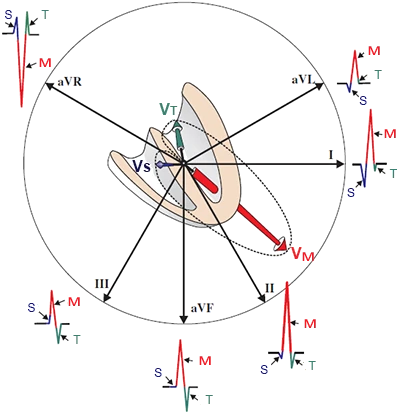
- Trên ECG, chúng ta chỉ thấy
- Các chuyển đạo chi
- Các vector điện học trong quá trình khử cực tâm thất
- Tâm thất khử cực dần dần
- Vách liên thất (V_S – vector vách)
- Tâm thất (V_M – vector chính)
- Mỏm thất trái (V_T – vector tận)
- Phức bộ QRS trông khác nhau ở mỗi chuyển đạo
- Bởi vì mỗi chuyển đạo "nhìn" các vector từ một góc khác nhau
- Nếu vector hướng
- Về phía chuyển đạo – xuất hiện sóng lệch dương
- Ra xa chuyển đạo – xuất hiện sóng lệch âm
- Các vector điện học được tạo ra
- Ở nhĩ và thất
- Trong quá trình khử cực và tái cực
Khử cực và tái cực (Depolarization and Repolarization)
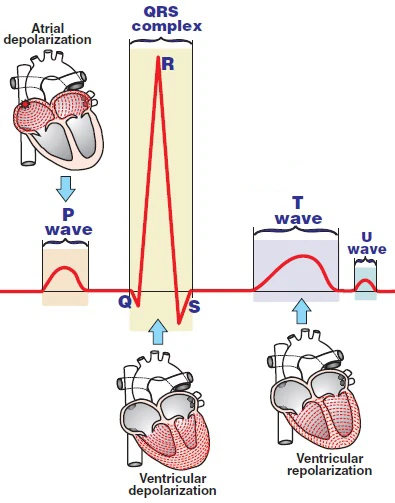
- ECG ghi lại và hiển thị
- Chỉ hoạt động điện học của cơ tim
- Không phải hoạt động cơ học
- Không phải hoạt động điện học của hệ thống dẫn truyền
- Sóng P
- Biểu diễn quá trình khử cực của nhĩ
- Sóng Ta
- Biểu diễn quá trình tái cực của nhĩ
- Thường không nhìn thấy được, bị ẩn trong phức bộ QRS
- Phức bộ QRS
- Biểu diễn khử cực tâm thất
- Sóng T
- Biểu diễn tái cực tâm thất
Khoảng (Interval)
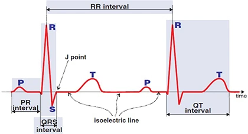
- Khoảng là một đoạn có chứa sóng hoặc phức bộ
Đoạn (Segment)
- Đoạn là một phần chỉ chứa đường đẳng điện
Sóng và sóng lệch (Waves and Deflections)
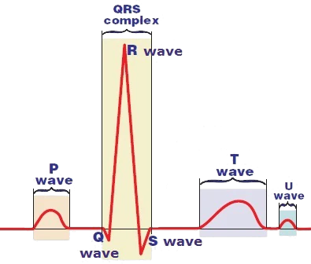
- Sóng (wave)
- Có dạng tròn
- Sóng lệch (deflection)
- Có đỉnh nhọn
- Sóng (wave)
- Trong tiếng Anh, cả sóng và sóng lệch
- Đều được gọi là wave
Khoảng PQ (PQ Interval)
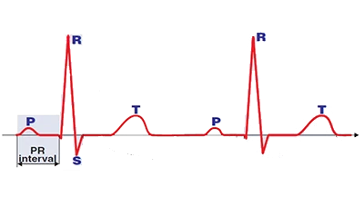
- Bắt đầu ở điểm khởi đầu của sóng P (khử cực nhĩ)
- Kết thúc ở điểm khởi đầu của phức bộ QRS (khử cực thất)
- Khoảng PQ đôi khi được gọi là khoảng PR
- Bởi vì đôi khi phức bộ QRS bắt đầu bằng sóng R
- Thời gian là 0,12 – 0,2 giây
- Đó là khoảng thời gian xung động đi từ nút xoang đến tâm thất
- Nó chủ yếu được dùng trong chẩn đoán blốc nhĩ thất
Khoảng RR (RR Interval)
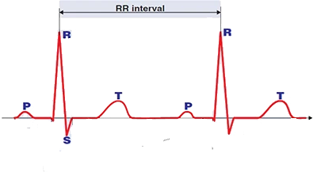
- Đỉnh của sóng R
- Là thời điểm
- Khi tâm thất đã khử cực hoàn toàn
- Tâm thất đã khử cực tạo ra
- Vector tim chính
- Là thời điểm
- Dùng để tính tần số tim
Phức bộ QRS (QRS Complex)
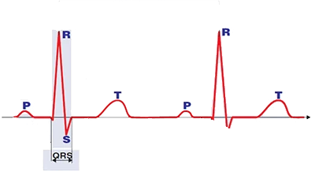
- Đôi khi được gọi là khoảng QRS
- Phức bộ QRS biểu diễn quá trình khử cực tâm thất
- Khử cực tâm thất có 3 vector điện học
- Mỗi vector có một hướng khác nhau
- Khử cực tâm thất
- Luôn luôn được gọi là phức bộ QRS
- Ngay cả khi nó có cấu hình QRS khác nhau (RS, qR, Rs, R, rSR)
- Tâm thất có khối cơ tim đồ sộ hơn nhĩ
- Đây là lý do biên độ của phức bộ QRS lớn hơn
- So với biên độ của sóng P (khử cực nhĩ)
- Đây là lý do biên độ của phức bộ QRS lớn hơn
- Khử cực tâm thất (phức bộ QRS) kéo dài 0,06s – 0,1s
Khoảng QT (QT Interval)
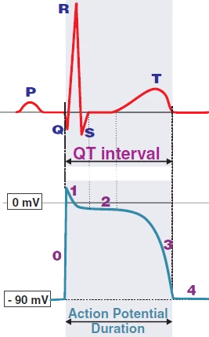
- Bắt đầu bằng khử cực tâm thất (phức bộ QRS)
- Kết thúc bằng tái cực tâm thất (điểm kết thúc sóng T)
- Khoảng QT biểu diễn thời gian của điện thế hoạt động của tâm thất
- Có thời gian 0,35 – 0,44s
- Thay đổi theo tần số, nên người ta tính khoảng QT hiệu chỉnh
- Kéo dài khoảng QT có nguy cơ gây rối loạn nhịp thất Torsades de Pointes
Đoạn ST (ST Segment)
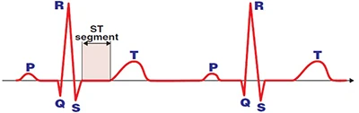
- Là đoạn nằm giữa điểm kết thúc phức bộ QRS và điểm bắt đầu sóng T
- Trong đoạn ST
- Không có hoạt động điện học ở tâm thất
- Tâm nhĩ đang giãn
- Tâm thất đang co
- Chuẩn bị cho quá trình tái cực
- Đoạn ST là dấu chỉ điểm chính của thiếu máu cục bộ và nhồi máu
Sóng T (T Wave)
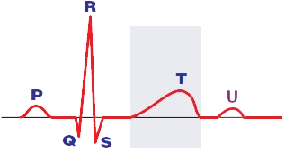
- Biểu diễn quá trình tái cực của tâm thất
- Rộng và thấp
- Bởi vì tái cực diễn ra chậm hơn và không đồng bộ hơn
- So với khử cực
- Bởi vì tái cực diễn ra chậm hơn và không đồng bộ hơn
- Sóng T là phần thay đổi nhiều nhất của đường cong ECG
- Sóng T bình thường là cùng chiều (concordant)
- Có cùng hướng với phức bộ QRS
Sóng U (U Wave)
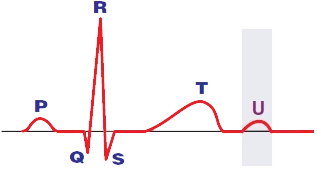
- Sóng U đi sau sóng T
- Cơ chế hình thành của nó chưa chắc chắn
- Có lẽ do tái cực muộn của vách liên thất
- Không phải lúc nào cũng có
- Thường xuất hiện trong các trường hợp hạ kali máu
SÓNG P
Cơ chế hình thành sóng P (Mechanism of P Wave Formation)
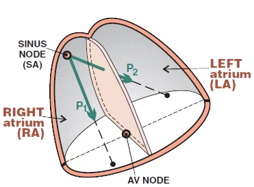
- Xung động (điện thế hoạt động)
- Phát sinh ở nút xoang với tần số 60/phút.
- Sóng khử cực ở nhĩ
- Lan sang nhĩ phải (P1) và nhĩ trái (P2)
- Vector nhĩ tổng hợp (P1 + P2)
- Hướng từ nút xoang tới nút nhĩ thất
- Sóng P biểu diễn khử cực nhĩ
- Vector nhĩ tổng hợp
- Nên được hình dung trong không gian 3 chiều
- Hình bên phải cho thấy nó trong không gian 2 chiều
Các chuyển đạo chi và sóng P (Limb Leads and the P Wave)
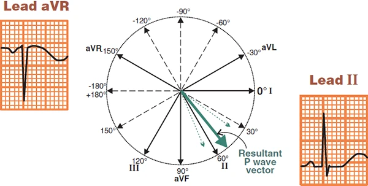
Các chuyển đạo chi và sóng P
- Các chuyển đạo chi (I, II, III, aVF, aVR, aVL) nhìn tim ở mặt phẳng trán
- Vector nhĩ tổng hợp (P1 + P2) hướng từ nút xoang tới nút nhĩ thất, tức là
- Từ chuyển đạo aVR
- Tới chuyển đạo II
- Vector càng hướng thẳng về phía chuyển đạo
- Thì sóng càng dương
- Vector nhĩ tổng hợp
- Hướng thẳng tới chuyển đạo II (do đó sóng P thấy rõ nhất ở chuyển đạo II)
- Hướng ra xa chuyển đạo aVR (do đó sóng P âm ở chuyển đạo aVF)
Chuyển đạo II và sóng P (Lead II and the P Wave)
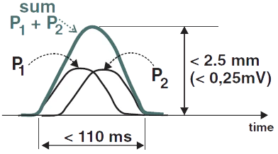
- Sóng P sinh lý ở chuyển đạo II có các kích thước sau:
- Cao < 2,5mm
- Rộng < 110ms
Các chuyển đạo trước tim và sóng P (Precordial Leads and the P Wave)
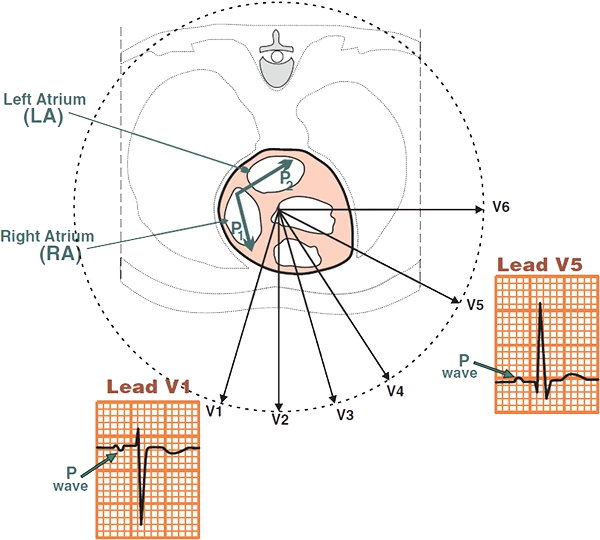
- Tim xoay sang trái ở mặt phẳng ngang
- Bên phải của tim hướng ra trước
- Bên trái của tim hướng ra sau
- Trục giải phẫu của tim không tương ứng với trục điện học trên ECG
- Độ lớn của vector trên ECG tỉ lệ thuận với khối cơ nơi vector đó phát sinh
- Cơ nhĩ mỏng tạo ra sóng P nhỏ
- Cơ thất đồ sộ tạo ra phức bộ QRS lớn
Các chuyển đạo trước tim và sóng P
- Các chuyển đạo trước tim (V1-V6) nhìn tim ở mặt phẳng ngang
- Chuyển đạo trước tim V1 nhìn hai nhĩ từ phía trước. Hai nhĩ khử cực lần lượt:
- Đầu tiên nhĩ phải khử cực (P1) từ nút xoang
- Vector của nhĩ phải hướng về phía chuyển đạo V1
- Sau đó nhĩ trái khử cực (P2) từ nút xoang qua bó Bachmann
- Vector của nhĩ trái hướng ra xa chuyển đạo V1
- Đầu tiên nhĩ phải khử cực (P1) từ nút xoang
V1 và sóng P (V1 and the P Wave)
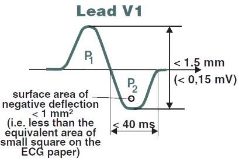
- Sóng P sinh lý ở chuyển đạo V1 có dạng hai pha:
- Cao < 1,5mm
- Rộng của P2 < 40ms (khử cực nhĩ trái)
- Diện tích P2 < 1mm^2 (< 1 ô)
ECG và sóng P (ECG and the P Wave)
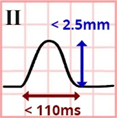
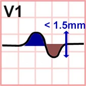
- Sóng P được đánh giá ở chuyển đạo II và V1
- Vì chúng cho hình ảnh tốt nhất về hai nhĩ
- Hình dạng
- Một pha ở chuyển đạo II (dương)
- Hai pha ở chuyển đạo V1 (dương – âm)
- Trục ở mặt phẳng trán (0 – 75°)
- Sóng P dương ở I và II
- Sóng P âm ở aVR
- Thời gian
- < 110ms (tối đa 3 ô nhỏ)
- Hai nhĩ khử cực trong vòng 110ms
- < 110ms (tối đa 3 ô nhỏ)
- Biên độ
- < 2,5mm ở các chuyển đạo chi
- < 1,5mm ở các chuyển đạo trước tim
Sóng P bất thường (Abnormal P Wave)
- Trong phì đại nhĩ, sẽ xảy ra các tình huống sau:
- P mitrale (phì đại nhĩ trái)
- P pulmonale (phì đại nhĩ phải)
- Nhịp bộ nối
- Xung động đi từ nút nhĩ thất tới nút xoang
- Nhịp nhanh nhĩ ngoại vị
- Sóng P có hình dạng khác so với trong nhịp xoang
- Xung động phát sinh từ một ổ ngoại vị ngoài nút xoang
- Nhịp nhanh nhĩ đa ổ
- Trên ECG có ít nhất 3 sóng P hình dạng khác nhau
- Các xung động phát sinh từ ít nhất 3 ổ ngoại vị ở nhĩ
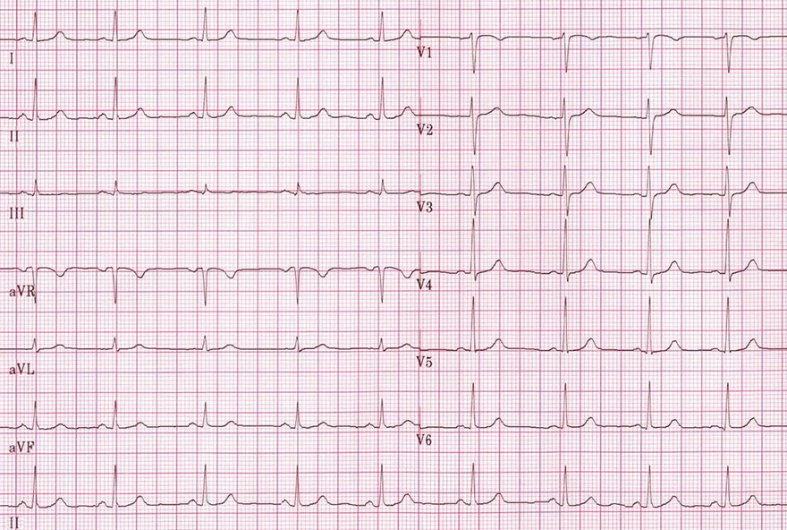
Sóng P bình thường và nhịp xoang
- Nhịp xoang với tần số 75/phút.
- Sóng P ở chuyển đạo II
- Dương và một pha
- Rộng < 110ms ( < 3 ô nhỏ)
- Biên độ < 2,5mm ( < 2,5 ô nhỏ)
- Sóng P ở chuyển đạo V1
- Hai pha (có thể lẫn vào đường đẳng điện)
- Biên độ < 1,5mm ( < 1,5 ô nhỏ)
- Diện tích sóng âm < 1 ô nhỏ
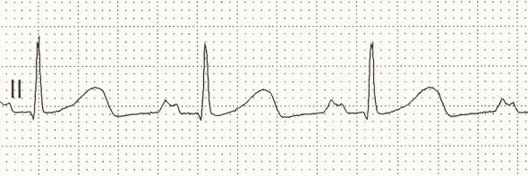
P mitrale (phì đại nhĩ trái)
- Rộng của P > 110ms ( > 3 ô nhỏ)
- Sóng P có 2 đỉnh
- Bệnh nhân đã được siêu âm tim xác nhận hẹp van hai lá
- Hẹp van hai lá là nguyên nhân thường gặp nhất của phì đại nhĩ trái
- Vì vậy, phì đại nhĩ trái trên ECG được gọi là P mitrale
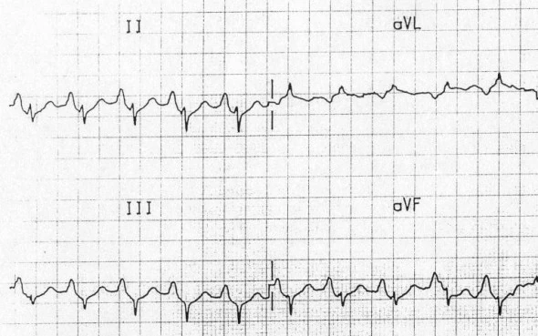
P pulmonale (phì đại nhĩ phải)
- Biên độ sóng P > 2,5mm (ở chuyển đạo II)
- Bệnh nhân có COPD và tăng áp phổi
- Tăng áp phổi là nguyên nhân thường gặp nhất của phì đại thất phải và phì đại nhĩ phải
- Vì vậy, phì đại nhĩ phải trên ECG được gọi là P pulmonale
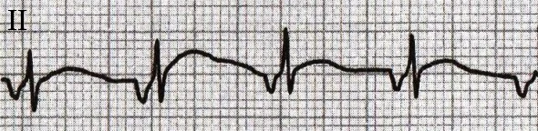
Sóng P ngược dòng (âm)
- Sóng P âm ở chuyển đạo II
- Bởi vì xung động phát sinh ở nút nhĩ thất và hoạt hóa hai nhĩ theo chiều ngược dòng (từ dưới lên trên)
- Khoảng PQ rút ngắn < 0,12s
- Điều này điển hình cho nhịp bộ nối trên
- ECG cho thấy nhịp bộ nối trên tăng tốc với tần số 100/phút.
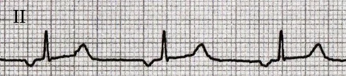
Sóng P ngược dòng (âm)
- Nhịp nhĩ ngoại vị với tần số 60/phút.
- Trong nhịp nhĩ ngoại vị
- Các xung động phát sinh từ một ổ ngoại vị ở nhĩ
- Không phải ở nút nhĩ thất như trong nhịp bộ nối
- Trong trường hợp này ổ ngoại vị nằm gần nút nhĩ thất
- Bởi vì sóng P ngược dòng ở chuyển đạo II
- Đây là trường hợp tương tự trường hợp trên
- Tuy nhiên, ở đây khoảng PQ > 120ms, và sóng P nông hơn
- Như vậy, vector nhĩ không hướng chính xác từ chuyển đạo II
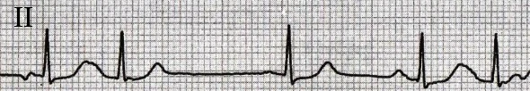
3 sóng P khác nhau
- Trên ECG có nhịp nhĩ đa ổ
- Có 3 ổ ngoại vị ở nhĩ
- Lần lượt phát ra xung động
- Mỗi ổ có một vector riêng với hướng khác nhau
- Vì vậy, trên ECG có 3 sóng P khác nhau (hai pha, dẹt, dương)
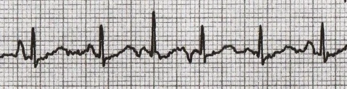
Các sóng P khác nhau
- Trên ECG có nhịp nhanh nhĩ đa ổ, với tần số > 100/phút.
- Nguyên lý hoàn toàn giống như đã mô tả ở ECG trước
- Ngoại trừ đây là một nhịp nhanh (tần số > 100/phút)
- Trên ECG có 4 (hoặc có thể 5) sóng P hình dạng khác nhau
- Mỗi ổ ngoại vị có sóng P riêng của nó
SÓNG Q
Cơ chế hình thành sóng Q (Mechanism of Q Wave Formation)
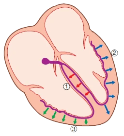
- Xung động (điện thế hoạt động) phát sinh tự động ở nút xoang
- Với tần số khoảng 60/phút (nhịp xoang)
- Sau đó xung động hoạt hóa dần dần (khử cực)
- Hai nhĩ (sóng P)
- Nút nhĩ thất, bó His
- Vách liên thất
- Hai thất
- Vách liên thất (1) được hoạt hóa từ trái sang phải
- Bạn nên hình dung vector tổng hợp của vách trong không gian 3 chiều
- Trong hình bên phải, nó được thể hiện trong không gian 2 chiều
- Bạn nên hình dung vector tổng hợp của vách trong không gian 3 chiều
- Nếu vector của vách liên thất hướng
- Ra xa các chuyển đạo ECG, sẽ hình thành sóng Q
- Sau đó hai thất (2, 3) được hoạt hóa, tạo ra vector thất chính
- Nếu vector này cũng hướng ra xa các chuyển đạo, nó cũng tạo ra sóng Q
Các chuyển đạo chi và sóng Q (Limb Leads and Q Wave)
- Các chuyển đạo chi (I, II, III, aVF, aVR, aVL)
- Nhìn tim ở mặt phẳng trán
- Hai thất được hoạt hóa theo thứ tự sau:
- Vách liên thất (V_S – vector vách)
- Thất trái và thất phải (V_M – vector chính)
- Mỏm thất trái (V_T – vector tận)
- Vector vách liên thất (V_S)
- Hướng ra xa các chuyển đạo aVL, I (đôi khi cả chuyển đạo II)
- Và tạo ra sóng Q
- Vector tim chính (V_M)
- Hướng ra xa các chuyển đạo aVR và III (một phần từ III)
- Do đó đôi khi có thể thấy sóng Q ở aVR và III
- Sóng Q này xảy ra khi có trục lệch trái
- Vector V_M xoay về phía chuyển đạo I
- Ở người béo phì, tim (V_M) thay đổi vị trí theo nhịp thở
- Và tạo ra sóng Q liên quan tư thế
Các chuyển đạo trước tim và sóng Q (Precordial Leads and Q Wave)
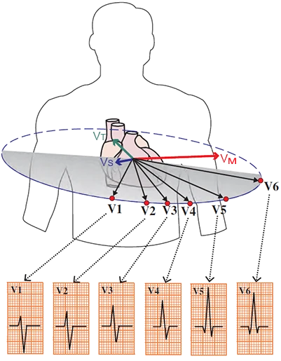
- Các chuyển đạo trước tim (V1-V6)
- Nhìn tim ở mặt phẳng ngang
- Các chuyển đạo trước tim (V1 và V6) "nhìn"
- Vector vách từ hai phía gần như đối diện nhau
- Ở V6 sẽ có sóng Q (vector hướng ra xa chuyển đạo V6)
- Sóng Q cũng thường xuất hiện ở các chuyển đạo (V4, V5)
- Ở V1 sẽ có một sóng r nhỏ (vector hướng về phía chuyển đạo V1)
ECG và sóng Q (ECG and Q Wave)
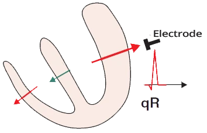
- Rộng < 0,03s (< 1 ô nhỏ)
- Sâu < 3mm (< 3 ô nhỏ)
- Chỉ ở aVR và III mới có thể vượt quá 3mm
- Đây là một biến thể bình thường
(liên quan tới vector thất chính)
- Không vượt quá 1/4 sóng R ở chuyển đạo tương ứng
- Thường gặp ở các chuyển đạo bên (aVL, I, V5, V6)
- Không nên có ở các chuyển đạo V1-V3
Sóng Q bệnh lý (Pathological Q Wave)
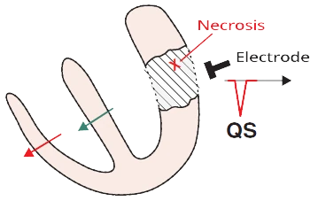
- Là một sóng Q lớn vượt quá các thông số đã nêu
- Thường gặp nhất
- Sau một nhồi máu cơ tim cũ
- Ở các chuyển đạo "nhìn" vào vùng hoại tử
- (từ cửa sổ điện học)
- Sóng Q bệnh lý (lớn) đôi khi là một biến thể bình thường
- Nếu tim xoay, thì các vector tim cũng xoay theo
- Các vector này khi đó chiếu vào các chuyển đạo ECG từ một góc khác
- Và có thể tạo ra sóng Q bệnh lý
- Sóng Q do tư thế
- Trong hít vào và thở ra sâu, đặc biệt ở người béo phì
- Mỏm tim di chuyển lên và xuống (cả vector V_M)
- Xuất hiện trong thì thở ra sâu
Các biến thể của sóng Q (Variants of the Q Wave)
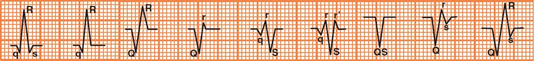
Danh pháp phức bộ QRS
- Chữ in hoa (Q, R, S) chỉ các sóng lệch ưu thế của phức bộ QRS (danh pháp phức bộ QRS)
- Chữ in thường (q, r, s) chỉ các sóng lệch nhỏ hơn 1/2 sóng lệch ưu thế của phức bộ QRS
- Sóng Q là sóng lệch âm đầu tiên của phức bộ QRS
- Phức bộ QS là một phức bộ QRS âm hoàn toàn
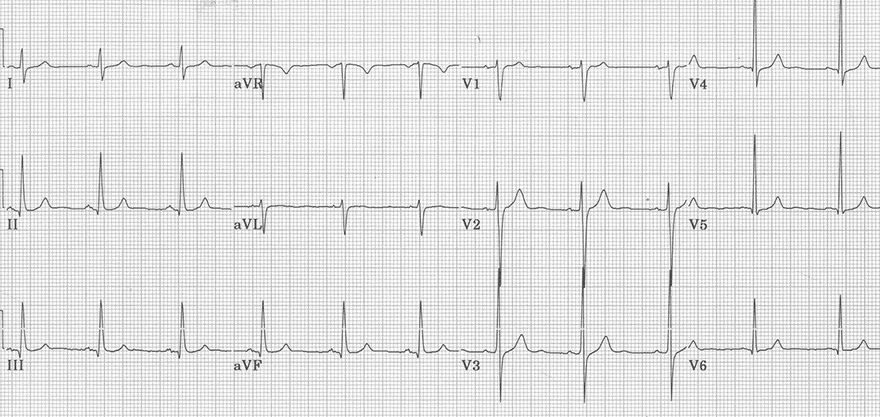
Sóng Q sinh lý và nhịp xoang
- ECG cho thấy nhịp xoang
- Sóng Q thấy ở (II, III, aVF, V4-V6)
- Rộng < 0,03s
- Sâu < 3mm
- Sóng Q ở chuyển đạo aVR có thể có kích thước bệnh lý
- Vector tim chính (V_M) hướng thẳng ra xa chuyển đạo aVR (một phần từ chuyển đạo III)
- Sóng Q âm lớn xuất hiện ở aVR (đôi khi ở chuyển đạo III)
- Tuy nhiên, ở chuyển đạo aVR này có dạng rS
- Trước sóng S sâu có một sóng r nhỏ – là kết quả của khử cực vách liên thất: vector V_S
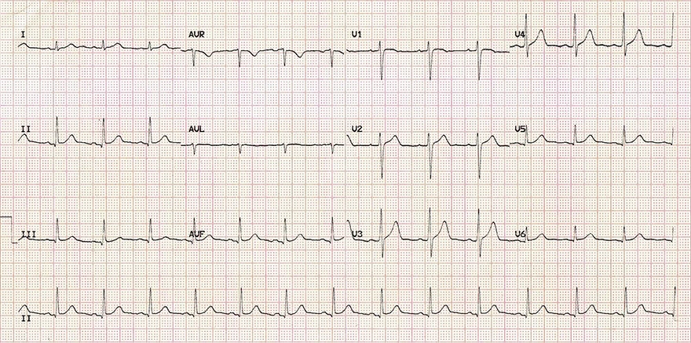
Sóng Q sinh lý và nhịp xoang
- ECG cho thấy nhịp xoang
- Sóng Q hiện diện ở (II, III, aVF, V4-V6)
- Rộng < 0,03 s
- Sâu < 3 mm
- Sóng Q ở chuyển đạo aVR có thể có kích thước bệnh lý
- Vector tim chính (V_M) hướng thẳng ra xa chuyển đạo aVR (một phần từ chuyển đạo III)
- Một sóng Q âm lớn xuất hiện ở aVR (đôi khi ở chuyển đạo III)
- Tuy nhiên, ở chuyển đạo aVR này có dạng rS
- Trước sóng S sâu có một sóng r nhỏ – là kết quả của khử cực vách liên thất: vector V_S
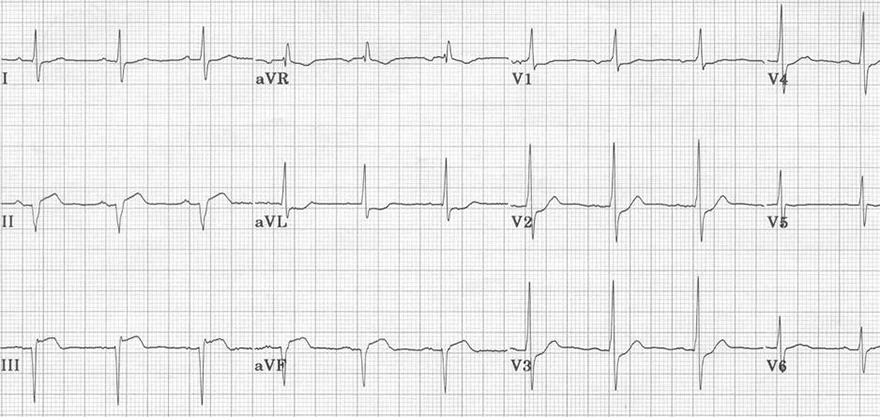
Sóng Q bệnh lý và nhồi máu cũ
- Sóng Q bệnh lý (lớn)
- Ở các chuyển đạo dưới (II, III, aVF)
- ECG cho thấy một nhồi máu thành dưới – sau cũ (dưới – sau)
- Sóng Q bệnh lý ở các chuyển đạo dưới
(II, III, aVF)- Sâu > 3 mm
- Rộng > 0,03 s
- Sóng R cao ở V1-V3
- Là sóng Q soi gương ở thành sau (sóng Q bệnh lý sẽ thấy được ở các chuyển đạo sau V7-V9)
- Sóng Q bệnh lý ở các chuyển đạo dưới
Sóng Q do tư thế (Positional Q Wave)
- Nếu bệnh nhân có cơ hoành cao (béo phì, khi nằm, trong thì thở ra)
- Vector tim chính (V_M) xoay lên trên và sang trái và hướng ra xa chuyển đạo III
- Một sóng Q bệnh lý có thể xuất hiện ở chuyển đạo III
- Rộng > 0,03 s
- Sâu > 3 mm
- Sóng Q cũng có thể xuất hiện ở các chuyển đạo lân cận (II, aVF)
- Nhưng ở các chuyển đạo này nó thường không có thông số bệnh lý
- Sóng Q do tư thế có thể xuất hiện ở bệnh nhân hít thở sâu trong lúc ghi ECG (làm thay đổi trục tim)
- Nó xuất hiện trong thì thở ra
- Nó biến mất trong thì hít vào
- Nếu bệnh nhân đã bị nhồi máu thành dưới, thì sóng Q bệnh lý (II, III, aVF) hiện diện bất kể nhịp thở
- Nếu sóng Q bệnh lý biến mất khi hít vào sâu ở chuyển đạo III
- Thì đó là sóng Q sinh lý (một biến thể bình thường)
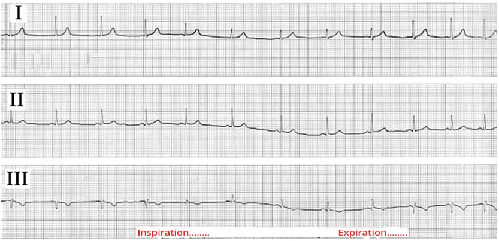
Sóng Q do tư thế (do hô hấp)
- Thở ra sâu
- Cơ hoành nâng lên và mỏm tim xoay lên trên và sang trái
- Vector tim chính cũng xoay lên trên và sang trái, do đó hướng ra xa chuyển đạo III
- Sóng Q xuất hiện ở chuyển đạo III
- Hít vào sâu
- Cơ hoành hạ xuống, và mỏm tim xoay xuống dưới và sang phải
- Vector tim chính cũng xoay xuống dưới và sang phải, do đó bắt đầu hướng về phía chuyển đạo III
- Sóng R tăng lên
- Và sóng Q biến mất
- Chu kỳ này lặp lại khi thở sâu, nghĩa là sóng Q ở chuyển đạo III xuất hiện rồi biến mất
- Đây là sóng Q do tư thế (do hô hấp)
SÓNG Q BỆNH LÝ
Sóng Q sinh lý (Physiological Q Wave)
Sóng Q sinh lý
- Sóng Q sinh lý xuất hiện ở các chuyển đạo bên (aVL, I, V5, V6)
- Nó được tạo ra bởi vector khử cực vách (V_S), vector này hướng ra xa các chuyển đạo bên
- Sóng Q cũng có thể xuất hiện ở các chuyển đạo aVR và III, nhưng sóng Q này được tạo ra bởi vector thất chính (V_M)
ECG và sóng Q sinh lý (ECG and Physiological Q Wave)
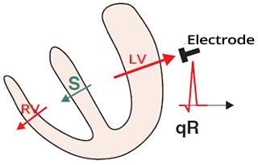
- Rộng < 0,03s (< 1 ô nhỏ)
- Sâu < 3mm (< 3 ô nhỏ)
- Chỉ ở aVR và III mới có thể vượt quá 3mm; đây là một biến thể bình thường (liên quan tới vector thất chính)
- Không vượt quá 1/4 sóng R ở chuyển đạo tương ứng
- Thường gặp ở các chuyển đạo bên (aVL, I, V5, V6)
- Không nên có ở các chuyển đạo V1-V3
Cửa sổ điện học (nhồi máu) và sóng Q bệnh lý (Electrical Window (Infarction) and Pathological Q Wave)
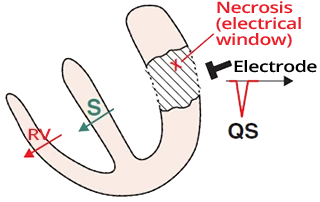
- Sóng Q bệnh lý là sóng Q lớn (vượt quá các kích thước đã nêu)
- Nguyên nhân thường gặp nhất là cửa sổ điện học trong nhồi máu cơ tim
- Trong nhồi máu, xảy ra hoại tử cơ tim
- Điều này tạo ra một cửa sổ điện học
- Cửa sổ điện học không tạo ra vector
- Các chuyển đạo "chỉ nhìn xuyên qua" cửa sổ đó
- Sóng Q bệnh lý xuất hiện ở các chuyển đạo nằm trên cửa sổ điện học
Sóng Q bệnh lý và nhồi máu (Pathological Q Wave and Infarction)
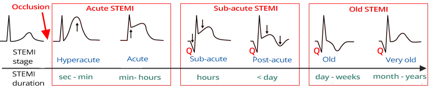
- Xuất hiện sau nhồi máu do cửa sổ điện học (sau STEMI, đôi khi cả sau NSTEMI)
- Thường xuất hiện nhất trong 9 giờ đầu sau nhồi máu
- Có thể xuất hiện từ vài phút tới 24 giờ sau nhồi máu
- Sóng Q bệnh lý có thể xuất hiện ở giai đoạn cấp hoặc bán cấp của nhồi máu
- Thời điểm xuất hiện phụ thuộc vào tuần hoàn bàng hệ của động mạch bị tắc
- Đôi khi nó có thể xuất hiện tạm thời trong thiếu máu cục bộ, mà không có nhồi máu
Các giai đoạn STEMI
- Diễn tiến ECG điển hình chỉ có ở nhồi máu STEMI, không có ở NSTEMI
- Trong thực hành lâm sàng, STEMI được chia thành 3 giai đoạn dựa trên hình ảnh ECG:
- STEMI cấp
- Cho thấy ST chênh lên mà chưa có sóng Q
- Thời gian: vài phút tới vài giờ
- STEMI bán cấp
- Cho thấy ST chênh lên và sóng Q
- Thời gian: vài giờ tới vài ngày
- STEMI cũ
- Cho thấy sóng Q mà không còn ST chênh lên
- Thời gian: > một tuần
- STEMI cấp
ECG và sóng Q bệnh lý (ECG and Pathological Q Wave)
- Sóng Q bệnh lý là sóng Q lớn hoặc xuất hiện ở các chuyển đạo không đúng
- Sóng Q bệnh lý (phải thỏa một trong các điều kiện sau):
- Rộng > 0,03s
- Sâu > 3mm
- Vượt quá 1/4 sóng R ở chuyển đạo đó
- Hiện diện ở các chuyển đạo V1-V3
- Sóng Q không nên có ở các chuyển đạo này
- Sóng Q bệnh lý có thể có ở các chuyển đạo aVR và III
- Sóng Q này được tạo ra bởi vector thất trái chính
- Và không phải bởi vector vách
- Sóng Q này được tạo ra bởi vector thất trái chính
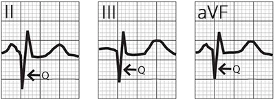
STEMI thành dưới cũ
- Sóng Q bệnh lý ở các chuyển đạo dưới (II, III, aVF)
- Điều này gợi ý STEMI thành dưới cũ
Sóng Q do nhồi máu (Infarction Q Wave)
- Nhồi máu là nguyên nhân thường gặp nhất của sóng Q bệnh lý (cửa sổ điện học)
- Sóng Q bệnh lý xuất hiện trong vòng vài phút tới 24 giờ sau nhồi máu
- Nó thường xuất hiện nhất trong 9 giờ đầu sau nhồi máu
- Nó hiện diện ở ít nhất 2 chuyển đạo liền kề nằm trên cửa sổ điện học (định khu nhồi máu)
Sóng Q giả nhồi máu (Pseudo-Infarction Q Wave)
- Đó là sóng Q bệnh lý do một nguyên nhân khác không phải nhồi máu
Các nguyên nhân gây sóng Q bệnh lý (Causes of Pathological Q Wave)
Nguyên nhân | Định khu | |
Nhồi máu cơ tim (MI) (thuật ngữ cũ: nhồi máu có sóng Q) | Trên cửa sổ điện học | Sau nhồi máu cơ tim thành dưới, sóng Q xuất hiện ở (II, III, aVF); sau nhồi máu cơ tim thành trước, sóng Q xuất hiện ở (V1-V3) |
Blốc nhánh trái (LBBB) | V1-V3, III, aVF | Xung động lan tới thất phải qua nhánh Tawara. Sau đó xung động lan tới thất trái qua cơ tim. Vector do đó hướng từ thất phải sang thất trái, tức là từ các chuyển đạo V1-V3, III và aVF. |
Blốc phân nhánh trái trước | II, III, aVF | Vector tim chính xoay ra xa các chuyển đạo II, III, aVF, nơi có thể xuất hiện sóng Q bệnh lý |
Blốc phân nhánh trái sau | I, aVL | Vector tim chính xoay ra xa các chuyển đạo I, aVL, nơi có thể xuất hiện sóng Q bệnh lý |
Thuyên tắc phổi | III | Gây quá tải và giãn tim phải. Trục tim chính chuyển sang phải. 20% bệnh nhân thuyên tắc phổi có sóng Q bệnh lý ở chuyển đạo III. Nó gây ra hình ảnh S1Q3T3 |
Bệnh thâm nhiễm | V1-V3 | Trong thoái hóa dạng bột (amyloidosis), các protein bệnh lý lắng đọng trong cơ tim, có thể gây sóng Q bệnh lý |
Hội chứng WPW | II, III, aVF | Trong hội chứng WPW, hai thất được hoạt hóa qua hai đường (nút nhĩ thất và đường dẫn truyền phụ). Các vector trong tâm thất có thể tạo ra sóng Q bệnh lý |
Viêm cơ tim | Trên một vùng nhất định của tim | Viêm cơ tim có thể gây sóng Q bệnh lý ở phía trên một vùng nhất định của tim |
Đụng dập tim | Trên vùng bị tổn thương | Đụng dập (giập) tim có thể gây sóng Q bệnh lý |
Biến dạng lồng ngực | Trên vùng bị ảnh hưởng | Biến dạng lồng ngực có thể tạo ra sóng Q bệnh lý do dẫn truyền điện học bị thay đổi |
Đặt sai vị trí điện cực | I, aVL | Các chuyển đạo chi đặt sai vị trí có thể tạo ra sóng Q bệnh lý |
Bệnh cơ tim phì đại | (aVL, I, V5, V6), hoặc (II, III, aVF) | Phì đại vách liên thất có thể làm tăng vector vách và gây sóng Q bệnh lý |
Sóng Q do tư thế | III | Sóng Q do tư thế xuất hiện ở chuyển đạo III trong thì thở ra sâu, do tim xoay làm vector tim chính hướng ra xa chuyển đạo III |
Sóng Q trong nhồi máu cơ tim (Myocardial Infarction Q Wave)
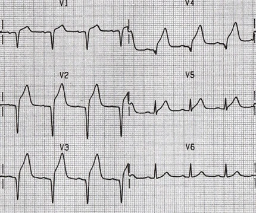
Nhồi máu trước – vách bán cấp
- ST chênh lên (V1-V5)
- Sóng Q bệnh lý (V1-V3)
- Sóng Q sinh lý không bao giờ có ở V1-V3
- Rộng > 0,03mm
- Sâu > 3mm
- Nhồi máu cơ tim và ECG
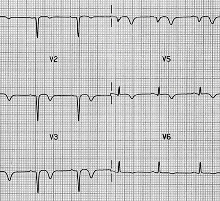
Nhồi máu trước – vách cũ
- Sóng T âm (V2-V5)
- Sóng Q bệnh lý (V1-V4)
- Sóng Q sinh lý không bao giờ có ở V1-V4
- Rộng > 0,03mm
- Sâu > 3mm
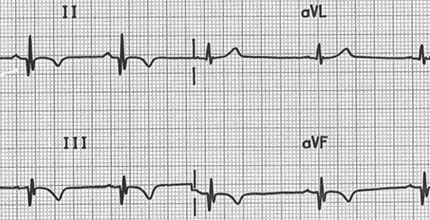
Nhồi máu thành dưới cũ
- Sóng T âm ở các chuyển đạo dưới
(II, III, aVF) - Sóng Q bệnh lý (II, III, aVF)
- Rộng > 0,03mm
- Sâu > 3mm
Sóng Q giả nhồi máu cơ tim (Pseudo-Myocardial Infarction Q Wave)
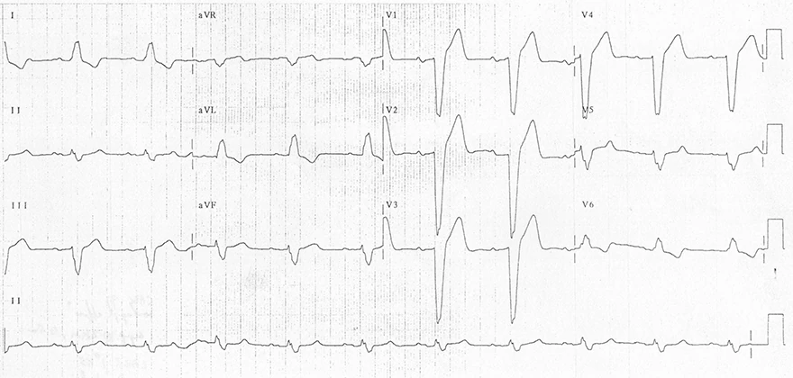
Blốc nhánh trái
- QRS giãn rộng > 0,12s
- Sóng S ưu thế (V1)
- Sóng R ưu thế (V6)
- Sóng Q bệnh lý (V1-V3)
- Sóng Q sinh lý không bao giờ có ở V1-V3
- Rộng > 0,03mm
- Sâu > 3mm
- Ở III và aVF có dạng rS, đây không phải là sóng Q bệnh lý
- Blốc nhánh trái
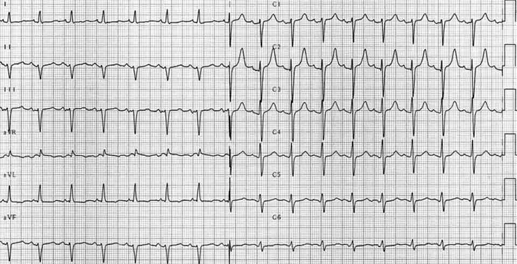
Blốc phân nhánh trái trước
- Trục lệch trái > -45º
- Các chuyển đạo dưới (II, III, aVF) âm
- Ở các chuyển đạo dưới (II, III, aVF) không có QS (sóng Q bệnh lý), mà là dạng rS
- Chú ý một sóng r rất nhỏ trước sóng S sâu (II, III, aVF)
- Tuy nhiên, đôi khi QS, tức là sóng Q bệnh lý, cũng có thể xuất hiện trong blốc phân nhánh này
- Blốc phân nhánh trái trước
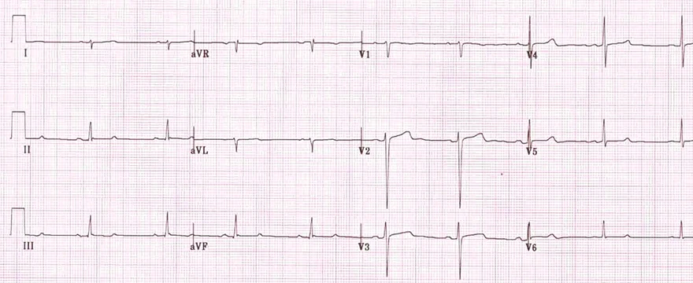
Blốc phân nhánh trái sau
- Trục lệch phải > +90º
- Các chuyển đạo dưới (III, aVF) chủ yếu dương
- Các chuyển đạo bên (I, aVL) chủ yếu âm
- Ở các chuyển đạo (I, aVL, V1) không có QS (sóng Q bệnh lý), mà là dạng rS
- Chú ý một sóng r rất nhỏ trước sóng S
- Tuy nhiên, đôi khi QS, tức là sóng Q bệnh lý, cũng có thể xuất hiện trong blốc phân nhánh này
- Ở các chuyển đạo aVR và III, sóng Q sâu > 3mm không được coi là bệnh lý
- Blốc phân nhánh trái sau
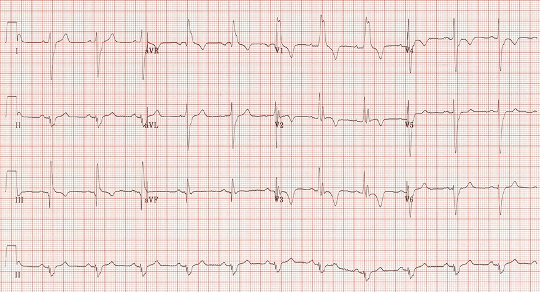
Thuyên tắc phổi cấp
- Lệch trục cực độ sang phải +180º (sóng R ưu thế ở aVR)
- Blốc nhánh phải
- QRS giãn rộng > 0,12s
- Rsr ở V1 ("tai thỏ" bên phải lẽ ra phải cao hơn – rsR, nhưng trục lệch phải cực độ)
- Thuyên tắc phổi cấp cũng tạo ra bộ ba S1 Q3 T3
- Sóng S âm (ở chuyển đạo I)
- Sóng Q sâu (ở chuyển đạo III)
- Sóng T âm (ở chuyển đạo III)
- Sóng Q bệnh lý ở chuyển đạo III > 3mm
- Sóng Q sâu như vậy ở aVR và III cũng có thể gặp ở người khỏe mạnh và có thể không phải là bệnh lý
- Nếu bệnh nhân thỏa thêm các tiêu chuẩn khác của thuyên tắc phổi, thì sóng Q sâu này chắc chắn là bệnh lý
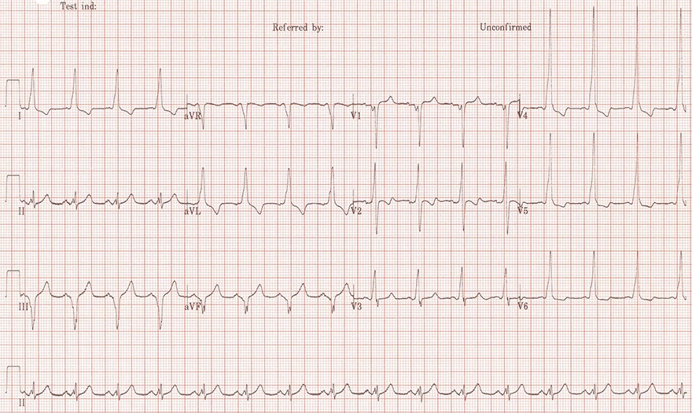
Hội chứng WPW
- Khoảng PQ rút ngắn < 0,12s
- Sóng delta
- Phần dưới của QRS giãn rộng, thấy rõ nhất ở (I, aVL, V4-V6)
- Sóng Q bệnh lý ở III, aVF (ở aVR, sóng Q hầu như luôn sâu – đây là một biến thể bình thường)
- Rộng > 0,03mm
- Sâu > 3mm
- Đây không phải là nhồi máu thành dưới cũ, mà là hội chứng WPW, vì có sóng delta
- Trong WPW, hai thất được hoạt hóa qua hai đường (nút nhĩ thất và bó Kent)
- Một vector bệnh lý hình thành trong tâm thất, tạo ra sóng Q bệnh lý (III, aVF)
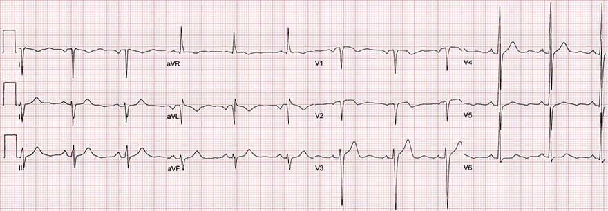
Đảo điện cực ECG ở hai tay
- Vector tim chính hướng về phía thất trái
- Về phía các chuyển đạo bên (I, aVL, V5-6), nên có sóng R ưu thế ở các chuyển đạo này
- Ra xa chuyển đạo aVR, nên có sóng Q sâu ở aVR, điều này không được coi là bệnh lý
- ECG này bị đảo điện cực hai tay, bởi vì:
- Sóng Q bệnh lý (I, aVL)
- Sóng R dương cao ở aVR
- Sóng R ưu thế ở V4-V6
- Một hình ảnh tương tự cũng có thể do:
- Lệch trục cực độ
- Tim sang phải (dextrocardia)
- Sóng Q bệnh lý (V1-2) gợi ý có thể có nhồi máu vách cũ
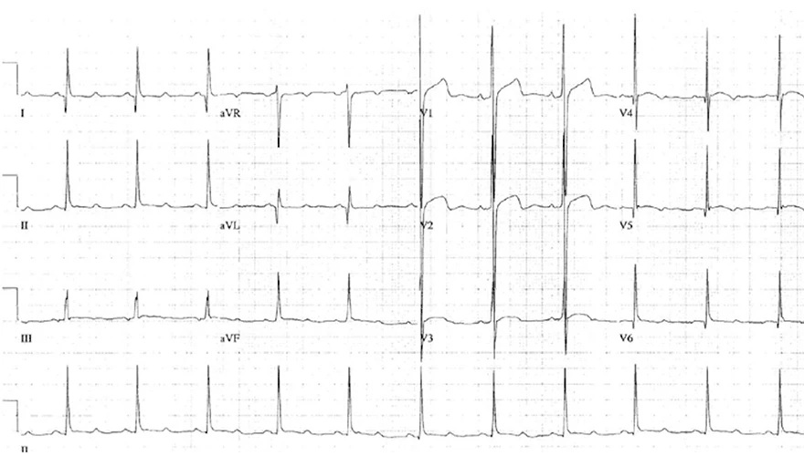
Bệnh cơ tim phì đại
- Phì đại thất trái
- Chỉ số Sokolow dương tính: S ở V2 + R ở V6 > 35mm
- Sóng Q bệnh lý (I, aVL, V5-V6)
- Rộng > 0,03mm
- Sâu > 3mm
- Trong bệnh cơ tim phì đại cũng có phì đại vách liên thất
- Điều này tạo ra một vector lớn hơn, và do đó sóng Q lớn hơn (ở các chuyển đạo bên)
Sóng Q do tư thế (Positional Q Wave)
- Nếu bệnh nhân có cơ hoành cao (béo phì, nằm, trong thì thở ra)
- Vector tim chính (V_M) hướng lên trên – sang trái và chỉ ra xa chuyển đạo III
- Do đó một sóng Q bệnh lý có thể xuất hiện ở chuyển đạo III
- Rộng > 0,03mm
- Sâu > 3mm
- Sóng Q cũng có thể xuất hiện ở các chuyển đạo lân cận (II, aVF)
- Nhưng ở các chuyển đạo này nó thường không có thông số bệnh lý
- Sóng Q do tư thế có thể xảy ra ở bệnh nhân hít thở sâu trong lúc ghi ECG (làm thay đổi trục tim)
- Nó xuất hiện trong thì thở ra
- Biến mất trong thì hít vào
- Nếu bệnh nhân đã bị nhồi máu thành dưới (nhồi máu thành dưới), thì sóng Q bệnh lý (II, III, aVF) hiện diện bất kể nhịp thở
- Nếu sóng Q bệnh lý biến mất khi hít vào sâu ở chuyển đạo III
- Thì đó là sóng Q sinh lý (một biến thể bình thường)
Sóng Q do tư thế (do hô hấp)
- Thở ra sâu
- Cơ hoành nâng lên, và mỏm tim xoay lên trên – sang trái
- Vector tim chính cũng xoay lên trên – sang trái và hướng ra xa chuyển đạo III
- Sóng Q bệnh lý hình thành ở chuyển đạo III
- Hít vào sâu
- Cơ hoành hạ xuống, và mỏm tim xoay xuống dưới – sang phải
- Vector tim chính cũng xoay xuống dưới – sang phải và bắt đầu hướng về phía chuyển đạo III
- Sóng R tăng lên
- Và sóng Q biến mất
- Chu kỳ này lặp lại khi thở sâu, nghĩa là sóng Q ở chuyển đạo III xuất hiện rồi biến mất
- Đó là sóng Q do tư thế (do hô hấp)
KHOẢNG PQ
Khoảng PQ (khoảng PR) (PQ Interval / PR Interval)
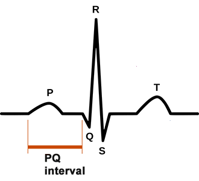
- Khoảng (interval) là một phần chứa các sóng hoặc dao động
- Đoạn (segment) là một phần chỉ chứa đường đẳng điện
- Khoảng PQ
- Là phần nằm giữa điểm bắt đầu của sóng P và điểm bắt đầu của phức bộ QRS
- Phức bộ QRS thường bắt đầu bằng sóng Q
- Khoảng PR
- Đôi khi khoảng PQ được gọi là khoảng PR
- Khi phức bộ QRS bắt đầu bằng sóng R
- Đôi khi khoảng PQ được gọi là khoảng PR
- Bất kể cấu hình của phức bộ QRS
- Thuật ngữ khoảng PQ vẫn được dùng phổ biến hơn
Đường cong ECG của khoảng PQ (ECG Curve of the PQ Interval)
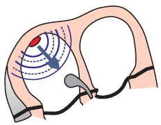
- Xung động phát sinh ở nút xoang
- Khi nó lan tới cơ nhĩ, sóng P bắt đầu hình thành
- Đồng thời, nó lan qua hệ thống dẫn truyền về phía nút nhĩ thất
- Xung động trong hệ thống dẫn truyền không tạo ra đường cong nào
- Xung động đi vào nút nhĩ thất
- Xung động lan từ nút xoang
- Qua cơ tim (sóng P)
- Và qua hệ thống dẫn truyền (các đường liên nút) tới nút nhĩ thất
- Vào thời điểm hai nhĩ được hoạt hóa (đỉnh sóng P)
- Nó đến nút nhĩ thất qua hệ thống dẫn truyền
- Xung động lan từ nút xoang
- Dẫn truyền chậm (giảm dần – decremental) trong nút nhĩ thất
- Xung động "nán lại" trong nút nhĩ thất khoảng 0,1s (không tạo ra đường cong nào)
- Sau đó nó đi tới bó His (không tạo ra đường cong nào)
- Hoạt hóa vách liên thất
- Từ bó His, xung động qua các sợi Purkinje
- Bắt đầu hoạt hóa cơ vách liên thất
- Sóng Q bắt đầu hình thành
- Từ bó His, xung động qua các sợi Purkinje
ECG và khoảng PQ (ECG and PQ Interval)
- Thời gian là 0,12 – 0,2s (3 tới 5 ô)
- Rút ngắn trong nhịp nhanh
- Kéo dài trong nhịp chậm
- Khoảng PQ rút ngắn (<0,12s)
- Nhịp nhanh xoang
- Nhịp bộ nối
- Tiền kích thích (hội chứng WPW, hội chứng LGL)
- Khoảng PQ kéo dài (>0,2s)
- Blốc nhĩ thất độ I
- Khoảng PQ thay đổi
- Blốc nhĩ thất độ II – Mobitz I (Wenckebach)
- Blốc nhĩ thất độ III
Khoảng PQ rút ngắn (<0,12s) (Shortened PQ Interval)
- Nhịp nhanh xoang
- Nhịp bộ nối
- Tiền kích thích (hội chứng WPW, hội chứng LGL)
Nhịp nhanh xoang
- Tần số tim: 125/phút
- Khoảng PQ: 0,12s (4 ô)
- Khoảng PQ ngắn ở mức ranh giới
- Trong nhịp nhanh, khoảng PQ rút ngắn
- Dẫn truyền qua nút nhĩ thất nhanh lên
Nhịp bộ nối
- Tần số tim: 50/phút
- Khoảng PQ: 0,08s (2 ô)
- Trong nhịp bộ nối, xung động phát sinh ở bộ nối nhĩ thất
- Hai nhĩ và hai thất được hoạt hóa gần như đồng thời
- Do đó có khoảng PQ rút ngắn
- Hai nhĩ được hoạt hóa theo chiều ngược dòng (từ dưới lên trên), dẫn tới:
- Sóng P ngược dòng (âm)
- Hai nhĩ và hai thất được hoạt hóa gần như đồng thời
Hội chứng WPW
- Khoảng PQ 0,12s (3 ô)
- Trong hội chứng WPW, hai thất được hoạt hóa đồng thời qua
- Bộ nối nhĩ thất
- Đường dẫn truyền phụ (bó Kent)
- Nối nhĩ và thất bên ngoài bộ nối nhĩ thất
- Hai thất được hoạt hóa sớm hơn (tiền kích thích) qua bó Kent
- Hình thành một sóng delta, làm rút ngắn khoảng PQ
Hội chứng LGL
- Khoảng PQ 0,08s (2 ô)
- Hội chứng LGL có đặc điểm là có một đường nối giữa nhĩ và bộ nối nhĩ thất
- Đường nối này (bó James) đi tắt qua nút nhĩ thất
- Xung động không bị làm chậm ở nút nhĩ thất
- Do đó, khoảng PQ sẽ bị rút ngắn
Khoảng PQ kéo dài (>0,2s) (Prolonged PQ Interval)
- Blốc nhĩ thất độ I
- Khoảng PQ kéo dài và không thay đổi
Blốc nhĩ thất độ I
- Giản đồ bậc thang minh họa sự lan truyền của xung động qua hệ thống dẫn truyền
- A – nhĩ (1), AV – bộ nối nhĩ thất (2), V – thất (4)
- Khoảng PQ: 0,28s (280ms)
- Trong blốc nhĩ thất độ I, dẫn truyền qua nút nhĩ thất bị kéo dài
- Khoảng PQ kéo dài (>0,2s)
Khoảng PQ thay đổi (Variable PQ Interval)
- Blốc nhĩ thất độ II – Mobitz I (Wenckebach)
- Blốc nhĩ thất độ III
Blốc nhĩ thất độ II – Mobitz I (Wenckebach)
- Giản đồ bậc thang minh họa sự lan truyền của xung động qua hệ thống dẫn truyền
- A – nhĩ (1), AV – bộ nối nhĩ thất (2), V – thất (4)
- Nhịp xoang
- Khoảng PP không đổi (810ms)
- Khoảng PQ dài dần ra cho tới khi sóng P bị blốc tại nút nhĩ thất
- 1. PQ (190ms)
- 2. PQ (290ms)
- 3. Sóng P bị blốc
- Sau đó chu kỳ lặp lại
- Đây là blốc nhĩ thất độ II – Mobitz I (Wenckebach) với dẫn truyền xuống thất (3:2)
- Từ 3 sóng P, có 2 sóng P được dẫn xuống thất (rồi chu kỳ lặp lại)
Blốc nhĩ thất độ III và nhịp thất
- Giản đồ bậc thang minh họa sự lan truyền của xung động qua hệ thống dẫn truyền
- A – nhĩ (1), AV – bộ nối nhĩ thất (2), V – thất (4)
- Nút xoang phát xung động đều đặn
- Tần số sóng P (nút xoang): 75/phút.
- Tất cả sóng P đều bị blốc tại nút nhĩ thất (dưới bó His – infra-Hisian)
- Một chủ nhịp thứ phát đã hoạt động ở tâm thất, tạo ra nhịp thất
- Tần số QRS: 35/phút.
- Đây là blốc nhĩ thất độ III (blốc hoàn toàn)
- Phân ly nhĩ thất – các sóng P độc lập với các phức bộ QRS
- Khoảng PQ thay đổi
ĐOẠN PQ
Đoạn PQ (đoạn PR) (PQ Segment / PR Segment)
- Khoảng (interval) là một phần chứa các sóng hoặc dao động
- Đoạn (segment) là một phần chỉ chứa đường đẳng điện
- Đoạn PQ
- Là phần nằm giữa điểm kết thúc của sóng P và điểm bắt đầu của phức bộ QRS
- Phức bộ QRS thường bắt đầu bằng sóng Q
- Đoạn PR
- Đôi khi đoạn PQ được gọi là đoạn PR
- Khi phức bộ QRS bắt đầu bằng sóng R
- Đôi khi đoạn PQ được gọi là đoạn PR
- Bất kể cấu hình của phức bộ QRS
- Thuật ngữ "đoạn PQ" vẫn được dùng phổ biến hơn
- Hiếm khi, đoạn PQ còn được gọi là:
- Đoạn PTa (trong đó sóng Ta là tái cực nhĩ)
- Đoạn PTp (Tp là "sóng T của sóng P", tức là sóng Ta)
- Sóng Ta không nhìn thấy được trên ECG; nó bị ẩn trong phức bộ QRS
- Đoạn PQ có 4 tên gọi có thể dùng
- Đoạn PQ, PR, PTa, PTp
- Thuật ngữ được dùng phổ biến nhất là: đoạn PQ
Đường cong ECG của khoảng PQ (ECG Curve of the PQ Interval)
- Xung động phát sinh ở nút xoang
- Khi nó truyền tới cơ nhĩ, nó bắt đầu tạo ra sóng P
- Đồng thời, nó lan qua hệ thống dẫn truyền về phía nút nhĩ thất
- Xung động trong hệ thống dẫn truyền không tạo ra đường cong nào
- Xung động đi vào nút nhĩ thất
- Xung động lan từ nút xoang
- Qua cơ tim (tạo ra sóng P)
- Và qua hệ thống dẫn truyền (qua các đường liên nút) vào nút nhĩ thất
- Vào thời điểm hai nhĩ được hoạt hóa (đỉnh sóng P)
- Nó đến nút nhĩ thất qua hệ thống dẫn truyền
- Xung động lan từ nút xoang
- Dẫn truyền chậm (giảm dần – decremental) trong nút nhĩ thất
- Xung động dừng lại trong nút nhĩ thất khoảng 0,1s (không tạo ra đường cong nào)
- Sau đó nó chuyển tới bó His (không tạo ra đường cong nào)
- Hoạt hóa vách liên thất
- Từ bó His, xung động lan qua các sợi Purkinje
- Nó bắt đầu hoạt hóa cơ vách liên thất
- Một sóng Q bắt đầu hình thành
- Từ bó His, xung động lan qua các sợi Purkinje
ECG và đoạn PQ (ECG and PQ Segment)
- Thời gian: 0,04 – 0,12s (1 tới 3 ô nhỏ)
- Nằm trên đường đẳng điện
- Khi đọc ECG, người ta đo khoảng PQ
- Đoạn PQ thường không được đo
- Đoạn PQ chênh lên và chênh xuống có thể do:
- Nhồi máu nhĩ
Viêm màng ngoài tim (Pericarditis)
- Viêm màng ngoài tim cấp có các dấu hiệu ECG sau trong 2 tuần đầu:
- ST chênh lên dạng lõm và PQ chênh xuống (ở tất cả các chuyển đạo trừ aVR và V1)
- ST chênh lên thường gặp nhất là 1mm (tối đa tới 5mm)
- ST chênh xuống và PQ chênh lên (aVR và V1)
- ST chênh lên dạng lõm và PQ chênh xuống (ở tất cả các chuyển đạo trừ aVR và V1)
- Chênh lên và chênh xuống được đánh giá so với đoạn TP
- Đoạn TP là khoảng nằm giữa điểm kết thúc sóng T và điểm bắt đầu sóng P
ST chênh lên và PQ chênh xuống
- Ở tất cả các chuyển đạo
- Trừ aVR và V1
ST chênh xuống và PQ chênh lên
- Chỉ ở aVR và V1
Viêm màng ngoài tim cấp
- ST chênh lên dạng lõm và PQ chênh xuống ở tất cả các chuyển đạo trừ (aVR và V1)
- Hình ảnh "lưỡi câu" (fishhook) không có ở các chuyển đạo trước tim (đây không phải tái cực sớm lành tính)
- ST chênh xuống và PQ chênh lên (aVR, V1)
- Dấu Spodick
- Đoạn T-P chênh xuống (V3-5)
- Bệnh nhân bị viêm màng ngoài tim (giai đoạn 1)
Viêm màng ngoài tim cấp
- ST chênh lên dạng lõm và PQ chênh xuống ở tất cả các chuyển đạo trừ (aVR)
- Viêm màng ngoài tim lẽ ra phải có ST chênh xuống và PQ chênh lên (aVR, V1)
- Hình ảnh "lưỡi câu" (fishhook) không có ở các chuyển đạo trước tim (đây không phải tái cực sớm lành tính)
- Tỉ số ST/T = 0,33
- Điều này chỉ ra viêm màng ngoài tim
- Bệnh nhân bị viêm màng ngoài tim (giai đoạn 1)
Nhồi máu nhĩ (Atrial Infarction)
- Cơ nhĩ mỏng
- Do đó, các thay đổi trên ECG trong nhồi máu nhĩ (thiếu máu cục bộ nhĩ) là rất ít
- Diễn tiến không rõ ràng (như trong nhồi máu cơ tim)
- Xuất hiện PQ chênh lên và PQ chênh xuống
- Các thay đổi tồn tại khoảng 4 giờ sau nhồi máu
- Theo ECG, không thể phân biệt thiếu máu cục bộ với nhồi máu nhĩ
- Do đó, các thay đổi trên ECG trong nhồi máu nhĩ (thiếu máu cục bộ nhĩ) là rất ít
- ECG và nhồi máu nhĩ:
- PQ chênh lên > 0,5mm (V5, V6) và PQ chênh xuống soi gương (V1, V2)
- PQ chênh lên > 0,5mm (I) và PQ chênh xuống soi gương (II, III)
- PQ chênh xuống > 1,5mm ở các chuyển đạo trước tim (V1-V6)
- PQ chênh xuống > 1,2mm (I, II, III) và loạn nhịp trên thất
- PQ chênh xuống > 1,2mm (II, III, aVF) và PQ chênh lên (aVR, V1)
Nhồi máu nhĩ và STEMI thành dưới
- STEMI thành dưới
- ST chênh lên ở các chuyển đạo dưới
(II, III, aVF)
- ST chênh lên ở các chuyển đạo dưới
- Nhồi máu nhĩ
- PQ chênh lên (aVR, V1) (mũi tên xanh dương)
- PQ chênh xuống (II, III, aVF) (mũi tên đỏ)
- Không thể phân biệt nhồi máu nhĩ với thiếu máu cục bộ nhĩ dựa trên ECG
SÓNG R
Cơ chế hình thành sóng R (Mechanism of R Wave Formation)
- Xung động (điện thế hoạt động)
- Phát sinh tự động ở nút xoang
- Với tần số khoảng 60/phút. (nhịp xoang)
- Sau đó xung động hoạt hóa (khử cực)
- Hai nhĩ (sóng P)
- Nút nhĩ thất, bó His
- Vách liên thất (sóng Q)
- Và qua các nhánh Tawara tới hai thất
- Vector thất chính (V_M)
- Vector V_M hướng về phía thất trái
- Bởi vì thất trái có
- Khối cơ tim đồ sộ hơn thất phải
- Hướng của các vector thất
- Phải được hình dung trong không gian 3 chiều
Các chuyển đạo chi và sóng R (Limb Leads and R Wave)
- Các chuyển đạo chi (I, II, III, aVF, aVR, aVL)
- Nhìn tim ở mặt phẳng trán
- Hai thất được hoạt hóa theo thứ tự:
- Vách liên thất (V_S – vector vách)
- Thất trái và thất phải (V_M – vector chính)
- Đáy thất trái (V_T – vector tận)
- Vector vách liên thất (V_S)
- Hướng ra xa các chuyển đạo aVL, I
(đôi khi cả chuyển đạo II) - Và tạo ra sóng Q
- Hướng ra xa các chuyển đạo aVL, I
- Vector tim chính (V_M)
- Hướng ra xa chuyển đạo aVR
- Tạo ra sóng S sâu (đôi khi là sóng Q)
- Hướng gần như thẳng về phía chuyển đạo II
- Nơi nó tạo ra sóng R cao nhất
- Hướng ra xa chuyển đạo aVR
Các chuyển đạo trước tim và sóng R (Precordial Leads and R Wave)
- Các chuyển đạo trước tim (V1-V6)
- Nhìn tim ở mặt phẳng ngang
- Vector tim chính (V_M)
- Hướng thẳng nhất về phía chuyển đạo V6
- Giữa vector và V6 có phổi (một chất cách điện)
- Sóng R ưu thế ở V5
- Hướng ra xa chuyển đạo V1
- Nơi sẽ có sóng S âm
- Hướng thẳng nhất về phía chuyển đạo V6
Tiến triển sóng R và vùng chuyển tiếp (R Wave Progression and Transition Zone)
- Tiến triển sóng R có nghĩa là
- Biên độ sóng R tăng dần ở các chuyển đạo trước tim từ chuyển đạo V1 tới chuyển đạo V5 (V4)
Tiến triển sóng R và vùng chuyển tiếp
- Vector tim chính
- Hướng thẳng tới chuyển đạo V4 (V5)
- Do đó, ở các chuyển đạo này sóng R cao nhất
- Nó vuông góc với V3
- Do đó, ở chuyển đạo V3 có sóng RS dương – âm
- Hướng thẳng tới chuyển đạo V4 (V5)
- Sóng RS (biên độ R = S)
- Được gọi là vùng chuyển tiếp và cho biết sự xoay của tim quanh trục dọc
ECG và sóng R (ECG and R Wave)
- Cao ở các chuyển đạo chi ≤ 10mm
- Tiến triển sóng R tăng dần từ V1 tới V5
- Cao ở V4-V6 ≤ 25mm
- Người trẻ có thể cao ≤ 35mm
- Cao ở V1-V2 ≤ 7mm
- Sóng R vượt quá giới hạn chiều cao thường gặp nhất trong
- Phì đại thất trái
- Phì đại thất phải
Các biến thể của sóng R (Variants of the R Wave)
Danh pháp phức bộ QRS
- Chữ in hoa (Q, R, S) chỉ các sóng ưu thế của phức bộ QRS
- Chữ in thường (q, r, s) chỉ các sóng nhỏ hơn 1/2 sóng ưu thế của phức bộ QRS
- Sóng Q là sóng âm đầu tiên của phức bộ QRS
- Sóng QS là một phức bộ QRS âm hoàn toàn
- Sóng R là bất kỳ sóng dương nào; nếu trong phức bộ QRS có 2 sóng dương, sóng thứ hai được ký hiệu bằng dấu phẩy trên (')
Sóng R bệnh lý (Pathological R Wave)
- Về mặt sinh lý, vector chính trong không gian 3 chiều hướng
- Ra xa chuyển đạo aVR (sóng S âm, sóng Q)
- Về phía các chuyển đạo bên (aVL, I, V5, V) (sóng R ưu thế)
- Những sóng R sau đây đòi hỏi chú ý đặc biệt:
- Sóng R ưu thế ở V1
- Ở chuyển đạo V1, sóng R không nên là sóng ưu thế
- Sóng R ưu thế ở aVR
- Ở chuyển đạo aVR, sóng R không nên là sóng ưu thế
- Tiến triển sóng R kém
- Chiều cao sóng R không tăng dần từ V1 tới V5
- QRS alternans (luân phiên biên độ QRS)
- Chiều cao sóng R thay đổi từ nhát bóp này sang nhát bóp khác
Sóng R sinh lý (Physiological R Wave)
Nhịp xoang
- Nhịp xoang và sóng R sinh lý
- Chiều cao sóng R ở các chuyển đạo chi ≤ 10mm (I, II, III, aVL, aVR, aVR)
- Chiều cao sóng R ở các chuyển đạo trước tim ≤ 25mm (V1-V6)
- Tiến triển sóng R từ V1 tới V4
- Ở các chuyển đạo aVR và V1, phức bộ QRS chủ yếu âm
- Bởi vì vector tim chính hướng ra xa các chuyển đạo này (aVR, V1)
- Chiều cao các sóng R không thay đổi (không có QRS alternans)
- Vùng chuyển tiếp là V2/V3 (tim xoay nhẹ ngược chiều kim đồng hồ)
- QRS chủ yếu âm ở chuyển đạo V2, và chủ yếu dương ở chuyển đạo V3
- Vùng chuyển tiếp nằm giữa V2 và V3, ký hiệu là V2/V3
Sóng R sinh lý (Physiological R Wave)
Sóng R sinh lý
- Nhịp xoang và sóng R sinh lý
- Chiều cao sóng R ở các chuyển đạo chi ≤ 10mm (I, II, III, aVL, aVR, aVR)
- Chiều cao sóng R ở các chuyển đạo trước tim ≤ 25mm (V1-V6)
- Tiến triển sóng R từ V1 tới V4 (V5)
- Ở các chuyển đạo aVR và V1, phức bộ QRS chủ yếu âm
- Bởi vì vector tim chính hướng ra xa các chuyển đạo này (aVR, V1)
- Chiều cao các sóng R không thay đổi (không có QRS alternans)
- Vùng chuyển tiếp ở V3 (tim xoay sinh lý quanh trục dọc)
Sóng R ưu thế ở V1 (Dominant R Wave in V1)
Blốc nhánh phải
- Ở V1 có dạng qR (sóng R ưu thế ở V1)
- Sóng R ưu thế ở V1 đòi hỏi chú ý đặc biệt
- Đây là một blốc nhánh phải
- Phức bộ QRS giãn rộng > 0,12s
- QRS ưu thế ở V1 (dạng qR)
- Sóng S sâu ở V6
- Tại sao sóng R lại ưu thế ở V1?
- Nhánh phải bị blốc
- Xung động hoạt hóa thất trái qua nhánh trái
- Và sau đó hoạt hóa thất phải từ thất trái, vector hướng về phía V1
Sóng R ưu thế ở aVR (Dominant R Wave in aVR)
Nhịp nhanh thất
- Ở aVR có một sóng R rộng (sóng R ưu thế ở aVR)
- Sóng R ưu thế ở aVR đòi hỏi chú ý đặc biệt
- Nó được dùng trong chẩn đoán phân biệt nhịp nhanh thất
- Nó gợi ý nhịp nhanh thất
- QRS giãn rộng cực độ > 0,16s
- Sóng R dương ở aVR
- Tại sao sóng R lại ưu thế ở aVR?
- Có một ổ ngoại vị ở tâm thất phát ra xung động
- Trong trường hợp này, ổ đó nằm đâu đó ở mỏm tim và vector từ ổ này hướng
- Về phía các chuyển đạo phía trên là aVR và V1 (sóng R dương)
- Ra xa các chuyển đạo phía dưới (II, III, aVF) (sóng Q âm)
Tiến triển sóng R kém (sóng R cụt ở V1-V4) (Decreased R Wave Progression)
Nhồi máu trước – vách cũ
- Tiến triển sóng R kém (sóng R cụt ở V1-V4)
- Sóng R ở các chuyển đạo V1-V3 không tăng dần, mà có một sóng Q sâu
- Sóng Q bệnh lý (sóng Q ở các chuyển đạo V1-V3 luôn được coi là bệnh lý)
- Trên ECG có một nhồi máu trước – vách cũ
- Sóng Q bệnh lý (V1-V4)
- Sóng T âm (V1-V5)
- Tại sao có tiến triển sóng R kém?
- Bởi vì có một sẹo ở thành trước do nhồi máu (cửa sổ điện học)
- Tất cả các chuyển đạo nằm trên cửa sổ điện học đều tạo ra sóng Q bệnh lý
- Và không tạo ra sóng R nào
QRS alternans (QRS Alternans)
Tràn dịch màng ngoài tim
- Trên ECG, biên độ (chiều cao) của sóng R thay đổi (chủ yếu ở các chuyển đạo V1-V3)
- QRS alternans chủ yếu liên quan tới tràn dịch màng ngoài tim
- Tại sao biên độ sóng R lại thay đổi?
- Bởi vì tim "trôi nổi" trong dịch màng ngoài tim và cứ mỗi nhát bóp lại "xoay"
- Sự "xoay" này cũng ảnh hưởng tới vector tim chính, dẫn tới thay đổi biên độ sóng R
TIẾN TRIỂN SÓNG R KÉM
Tiến triển sóng R và vùng chuyển tiếp (R Wave Progression and Transition Zone)
- Tiến triển sóng R được đánh giá ở các chuyển đạo trước tim (V1-V6)
- Nó có nghĩa là biên độ sóng R tăng dần từ chuyển đạo V1 tới chuyển đạo V5
- Bởi vì vector tim chính hướng về phía chuyển đạo V5
- Chưa có sự thống nhất chính xác về việc sóng R (từ V1 tới V5) phải tăng bao nhiêu mm
- Vùng chuyển tiếp
- Đó là sóng RS (biên độ R = S)
- Nó cho biết sự xoay của tim quanh trục dọc
Tiến triển sóng R và vùng chuyển tiếp
- Vector tim chính
- Hướng về phía chuyển đạo V5, đó là lý do sóng R cao nhất ở chuyển đạo này
- Nó gần như vuông góc với chuyển đạo V3, làm cho sóng R ở chuyển đạo V3 có dạng dương – âm, tức sóng RS
- Sóng RS (biên độ R = S) chính là vùng chuyển tiếp
Sóng R bệnh lý (Pathological R Wave)
- Về mặt sinh lý, vector chính trong không gian 3 chiều hướng
- Từ chuyển đạo aVR (sóng S âm, sóng Q)
- Về phía các chuyển đạo bên (aVL, I, V5, V) (sóng R ưu thế)
- Những tình huống sóng R sau đây đòi hỏi chú ý đặc biệt:
- Sóng R ưu thế ở V1
- Sóng R ở chuyển đạo V1 không nên là sóng ưu thế
- Sóng R ưu thế ở aVR
- Sóng R ở chuyển đạo aVR không nên là sóng ưu thế
- Tiến triển sóng R kém
- Chiều cao sóng R không tăng dần từ V1 tới V5
- QRS alternans
- Chiều cao sóng R thay đổi từ nhát bóp này sang nhát bóp khác
ECG và tiến triển sóng R kém (ECG and Decreased R Wave Progression)

- Sóng R ở V3 < 4mm
- Sóng R cụt
- (không có sóng R ở V1-V3)
- Sóng R cụt (V1-V3)
- Đó là tình trạng không có sóng R (V1-V3)
Nguyên nhân gây tiến triển sóng R kém (Causes of Decreased R Wave Progression)
- Nhồi máu trước – vách cũ
- (nguyên nhân thường gặp nhất của tiến triển sóng R kém)
- Phì đại thất trái
- Đảo nhầm chuyển đạo V1 với V3
- Bệnh cơ tim giãn
- Blốc nhánh Tawara trái
- Hội chứng WPW
- Tim sang phải (dextrocardia)
- Có thể là một biến thể bình thường
Sóng R cụt và nhồi máu trước – vách cũ
- Tiến triển sóng R kém (sóng R cụt ở V1-V4)
- Sóng R ở các chuyển đạo V1-V3 không tăng dần (có một sóng Q sâu)
- Sóng Q bệnh lý (sóng Q ở các chuyển đạo V1-V3 luôn được coi là bệnh lý)
- Sóng R ở các chuyển đạo V1-V3 không tăng dần (có một sóng Q sâu)
- Trên ECG có một nhồi máu trước – vách cũ
- Sóng Q bệnh lý (V1-V4)
- Sóng T âm (V1-V5)
- Tại sao có tiến triển sóng R kém?
- Bởi vì có một sẹo ở thành trước do nhồi máu (cửa sổ điện học)
- Các chuyển đạo ECG nằm trên cửa sổ điện học tạo ra một sóng Q bệnh lý
Tiến triển sóng R kém và phì đại thất trái
- Phì đại thất trái
- Chỉ số Sokolow dương tính (R ở V2 + R ở V6 > 35mm)
- Phì đại thất trái tạo ra một vector chính đồ sộ
- Vector này hướng về phía chuyển đạo V5, nên sóng R cao nhất ở V5
- Sóng R ở V3 < 4mm
- Vector chính của thất trái phì đại hướng ra xa các chuyển đạo V1-V3 (về phía các chuyển đạo V5-V6)
- Do đó, ở các chuyển đạo (V1-V3) phức bộ QRS chủ yếu âm
- Vector chính của thất trái phì đại hướng ra xa các chuyển đạo V1-V3 (về phía các chuyển đạo V5-V6)
Tiến triển sóng R kém và đảo chuyển đạo V1 với V3
- Bệnh nhân bị đảo chuyển đạo V1 và V3 trên lồng ngực
- Sóng R ở V3 < 4mm
- Chuyển đạo V1 trên giấy ECG (thực ra là chuyển đạo V3)
Tiến triển sóng R kém và bệnh cơ tim giãn
- Bệnh cơ tim giãn
- Phì đại hai nhĩ
- Phì đại thất trái
- Chỉ số Sokolow dương tính (R ở V2 + R ở V6 > 35mm)
- Phì đại thất phải
- Không nhìn thấy được vì vector thất phải bị "che khuất" bởi vector thất trái đồ sộ
- Sóng R ở V3 < 4mm
- Vector thất trái đồ sộ hướng ra xa các chuyển đạo V1-V3
- Đôi khi thậm chí có thể xuất hiện một sóng Q bệnh lý ở các chuyển đạo V1-V3
- Vector thất trái đồ sộ hướng ra xa các chuyển đạo V1-V3
- Phì đại và giãn buồng tim tạo ra cùng một hình ảnh ECG
- Bởi vì các vector điện học đều tăng lên trong cả phì đại lẫn giãn
- Trên siêu âm tim, bệnh nhân có giãn cả hai nhĩ và hai thất
Sóng R cụt và blốc nhánh trái
- Blốc nhánh trái
- QRS giãn rộng > 0,12s
- Sóng S ưu thế ở V1
- Sóng R ưu thế ở V6
- Sóng R cụt (V1-V3)
- Đầu tiên, thất phải được hoạt hóa qua các nhánh không bị blốc
- Sau đó tới thất trái
- Vector thất hướng ra xa thất phải (V1-V3)
- Về phía thất trái (các chuyển đạo bên I, aVL, V5-V6)
- Đầu tiên, thất phải được hoạt hóa qua các nhánh không bị blốc
Hội chứng WPW type B
- Hội chứng WPW (type B)
- Khoảng PQ rút ngắn < 0,12s
- Sóng delta
- Phần dưới của QRS giãn rộng, thấy rõ nhất ở (I, II, V4-V6)
- Type B (bó Kent nằm ở thất phải, dẫn tới QRS âm ở V1)
- Sóng R ở V3 < 4mm
- Hai thất được hoạt hóa qua 2 đường (qua nút nhĩ thất và bó Kent)
- Hai thất bắt đầu được hoạt hóa từ thất phải (bó Kent) hướng về thất trái
- Từ (V1-V3) tới (V5-6)
Tiến triển sóng R kém và tim sang phải
- Trong tim sang phải (dextrocardia), vector chính và tim xoay sang phải, tức trục lệch phải:
- Sóng R ưu thế ở aVR
- Sóng Q ưu thế ở chuyển đạo I
- Sóng R ở V3 < 4mm
- Bởi vì vector chính hướng ra xa các chuyển đạo bên (I, aVL, V5-6)
- Về phía ra sau và sang phải (một phần về phía V1)
- Do đó, ở V1 thấy một sóng R nhỏ
- Bởi vì vector chính hướng ra xa các chuyển đạo bên (I, aVL, V5-6)
SÓNG R ƯU THẾ Ở V1
Các chuyển đạo trước tim và sóng R (Precordial Leads and R Wave)
- Các chuyển đạo trước tim (V1-V6)
- Nhìn tim ở mặt phẳng ngang
- Vector tim chính (V_M)
- Hướng thẳng nhất về phía chuyển đạo V6
- Giữa vector và V6 có phổi (chất cách điện)
- Sóng R ưu thế ở V5
- Hướng ra xa chuyển đạo V1
- Nơi sẽ có sóng S âm
- Hướng thẳng nhất về phía chuyển đạo V6
Sóng R bệnh lý (Pathological R Wave)
- Về mặt sinh lý, vector chính trong không gian 3 chiều
- Hướng từ chuyển đạo aVR (sóng S âm, sóng Q)
- Về phía các chuyển đạo bên (aVL, I, V5, V) (sóng R ưu thế)
- Những sóng R sau đây đòi hỏi chú ý đặc biệt:
- Sóng R ưu thế ở V1
- Sóng R không nên là sóng ưu thế ở chuyển đạo V1
- Sóng R ưu thế ở aVR
- Sóng R không nên là sóng ưu thế ở chuyển đạo aVR
- Tiến triển sóng R kém
- Chiều cao sóng R không tăng dần từ V1 tới V5
- QRS alternans
- Chiều cao sóng R thay đổi từ nhát bóp này sang nhát bóp khác
ECG và sóng R ưu thế ở V1 (ECG and Dominant R Wave in V1)
Hội chứng WPW
- Sóng R ưu thế ở V1
- Sóng R ≥ sóng S
Các nguyên nhân gây sóng R ưu thế ở V1 (Causes of Dominant R Wave in V1)
- Biến thể bình thường ở trẻ em
- Phì đại thất phải
- Thuyên tắc phổi
- Blốc nhánh Tawara phải
- Nhồi máu cơ tim thành dưới
- Hội chứng WPW (type A)
- Đảo chuyển đạo ECG (V1 và V3)
- Tim sang phải (dextrocardia)
- Bệnh cơ tim phì đại
- Loạn dưỡng cơ
Nhịp nhanh xoang (trẻ 2 tuổi)
- Trẻ 2 tuổi khỏe mạnh
- Trẻ em có phì đại thất phải từ khi sinh ra
- Thất phải bơm máu chống lại áp lực cao hơn khi còn trong tử cung
- Thất trái bắt đầu trở nên ưu thế từ 4-6 tuổi
- Nhịp nhanh xoang 110/phút là sinh lý ở trẻ 2 tuổi
- Trẻ em có phì đại thất phải từ khi sinh ra
- Sóng R ưu thế ở V1
- Là do phì đại thất phải
- Thất phải phì đại làm vector tim chính xoay về phía chuyển đạo V1
- Nó biến mất khi trẻ lớn hơn (4-6 tuổi)
- Là do phì đại thất phải
Phì đại thất phải
- Trong phì đại thất phải, thất phải hoạt động điện học mạnh hơn
- Thất phải "xoay" vector tim chính về phía nó (về phía V1)
- Sóng R ưu thế ở V1
- Vector chính hướng về phía các chuyển đạo V1-V3
- Ví dụ, trong thuyên tắc phổi, tim phải bị quá tải, dẫn tới phì đại thất phải
Blốc nhánh Tawara phải
- Blốc nhánh Tawara phải
- Phức bộ QRS giãn rộng > 0,12s
- QRS ưu thế ở V1 (dạng rsR)
- Sóng S sâu ở V6
- Tại sao có sóng R ưu thế ở V1?
- Nhánh Tawara phải bị blốc
- Xung động hoạt hóa thất trái qua nhánh Tawara trái
- Và sau đó từ thất trái hoạt hóa thất phải, vector hướng về phía V1
STEMI thành sau
- Trong nhồi máu cơ tim STEMI, đầu tiên xuất hiện ST chênh lên, sau đó là sóng Q bệnh lý (diễn tiến STEMI)
- Ở các chuyển đạo soi gương, xuất hiện các thay đổi soi gương như ST chênh xuống và sóng R (như thấy trên ECG này)
- Sóng R ưu thế ở V1 và ST chênh xuống
- Đây là một thay đổi soi gương
- Sóng R (V1-V3) chính là hình ảnh soi gương của sóng Q ở các chuyển đạo V7-V9
- Các chuyển đạo sau (V7-V9) được đặt ở lưng khi nghi ngờ nhồi máu thành sau
Hội chứng WPW (type A)
- Hội chứng WPW type A
- Khoảng PQ rút ngắn < 0,12s
- Sóng delta – phần dưới của QRS giãn rộng, thấy rõ nhất ở (I, II, V4-V6)
- Type A (bó Kent nằm ở thất trái, dẫn tới QRS dương ở V1)
- Sóng R ưu thế ở V1
- Hai thất được hoạt hóa qua 2 đường (qua nút nhĩ thất và bó Kent)
- Vector thất khi đó hướng về phía thất phải (về phía các chuyển đạo V1-V3)
Đảo chuyển đạo V1 và V3
- Bệnh nhân bị đảo chuyển đạo trước tim V1 và V3
- Sóng R ưu thế ở V1
- Chuyển đạo V1 thực ra là chuyển đạo V3
Tim sang phải (dextrocardia)
- Trong tim sang phải, tim xoay sang phải, dẫn tới trục lệch phải:
- Sóng R ưu thế ở aVR
- Sóng Q ưu thế ở chuyển đạo I
- Sóng R (V1-V6) giảm dần
- Không còn giữ được tiến triển sóng R
- Sóng R cực cao ở V1
- Vector chính trong tim sang phải hướng từ V6 tới V1
Bệnh cơ tim phì đại
- Phì đại thất trái
- Chỉ số Sokolow dương tính (S ở V2 + R ở V6 > 35mm)
- Sóng Q bệnh lý (I, aVL, V5-V6)
- Sóng R cực cao ở V1
- Vector từ phì đại vách liên thất và thất phải tạo ra một sóng R cao ở V1
Loạn dưỡng cơ
- Loạn dưỡng cơ
- Đây là một nhóm bệnh di truyền đặc trưng bởi teo mô cơ toàn thân, bao gồm cả cơ tim
- Trên ECG xuất hiện các thay đổi không đặc hiệu
- ECG này là của một bệnh nhân loạn dưỡng cơ
- Sóng R ưu thế ở V1
- Có lẽ thất trái bị teo nhiều hơn thất phải
- Vector từ thất phải chiếm ưu thế hướng về phía các chuyển đạo V1-V3
SÓNG R ƯU THẾ Ở AVR
Các chuyển đạo chi và sóng R (Limb Leads and R Wave)
- Các chuyển đạo chi (I, II, III, aVF, aVR, aVL)
- Nhìn tim ở mặt phẳng trán
- Hai thất được hoạt hóa theo thứ tự sau:
- Vách liên thất (V_S – vector vách)
- Thất trái và thất phải (V_M – vector chính)
- Đáy thất trái (V_T – vector tận)
- Vector tim chính (V_M) hướng
- Từ chuyển đạo aVR
- Gần như thẳng tới chuyển đạo II
- Nơi nó tạo ra sóng R cao nhất
- Sóng R ưu thế ở aVR
- Đòi hỏi chú ý đặc biệt
- Bởi vì nó chỉ ra sự xoay cực độ của vector chính
- Về phía chuyển đạo aVR
Sóng R bệnh lý (Pathological R Wave)
- Về mặt sinh lý, vector chính hướng trong không gian 3 chiều
- Từ chuyển đạo aVR (sóng S âm, sóng Q)
- Về phía các chuyển đạo bên (aVL, I, V5, V) (sóng R ưu thế)
- Những tình huống sóng R sau đây đòi hỏi chú ý đặc biệt:
- Sóng R ưu thế ở V1
- Sóng R ở chuyển đạo V1 không nên là sóng ưu thế
- Sóng R ưu thế ở aVR
- Sóng R ở chuyển đạo aVR không nên là sóng ưu thế
- Tiến triển sóng R kém
- Chiều cao sóng R không tăng dần từ V1 tới V5
- QRS alternans
- Chiều cao sóng R thay đổi từ nhát bóp này sang nhát bóp khác
ECG và sóng R ưu thế ở aVR (ECG and Dominant R Wave in aVR)
Nhịp nhanh thất
- Sóng R ưu thế ở aVR
- Sóng R ≥ sóng S
Các nguyên nhân gây sóng R ưu thế ở aVR (Causes of Dominant R in aVR)
- Nhịp nhanh thất
- Thuốc chống trầm cảm ba vòng (ngộ độc)
- Đặt sai vị trí điện cực (tay trái và tay phải)
- Tim sang phải (dextrocardia)
- Thuyên tắc phổi
Nhịp nhanh thất
- Nhịp nhanh thất
- QRS giãn rộng cực độ > 0,16s
- Sóng R ưu thế ở aVR
- Sóng R ưu thế ở aVR
- Có một ổ ngoại vị ở tâm thất phát ra xung động
- Trong trường hợp này, ổ đó nằm đâu đó ở mỏm tim và vector từ ổ này hướng
- Về phía các chuyển đạo phía trên là aVR và V1 (sóng R dương)
- Ra xa các chuyển đạo phía dưới (II, III, aVF) (sóng Q âm)
- Chuyển đạo aVR được dùng trong chẩn đoán phân biệt nhịp nhanh thất
Thuốc chống trầm cảm ba vòng (ngộ độc)
- Trầm cảm ảnh hưởng khoảng 20% phụ nữ và 10% nam giới
- Ngộ độc thuốc chống trầm cảm gây ra các dấu hiệu sau trên ECG:
- Sóng R ưu thế ở aVR
- Dạng rSR ở aVR (và sóng R tận > 3mm)
- Giãn rộng phức bộ QRS
Tim sang phải (dextrocardia)
- Trong tim sang phải, tim và trục tim lệch sang phải:
- Sóng R ưu thế ở aVR
- Sóng Q ưu thế ở chuyển đạo I
- Tiến triển sóng R không được giữ nguyên
- Sóng R ưu thế ở aVR
- Vector chính trong tim sang phải hướng từ chuyển đạo I và về phía chuyển đạo aVR
Đảo điện cực ECG (tay trái và tay phải)
- Nếu bạn đảo các điện cực ECG ở hai tay của bệnh nhân
- Sẽ xuất hiện hình ảnh giống tim sang phải ở các chuyển đạo chi
- Sóng R ưu thế ở aVR, sóng S ưu thế ở chuyển đạo I
- Tuy nhiên, tiến triển sóng R ở các chuyển đạo trước tim vẫn được giữ nguyên
- Đây là dấu hiệu then chốt cho thấy đó không phải là tim sang phải
- Sóng R ưu thế ở aVR (vì thực ra đó là chuyển đạo aVL)
Các điện cực chi được đặt đúng vị trí
- Đây là ECG của bệnh nhân ở hình trước sau khi đặt đúng các điện cực ECG ở tay trái và tay phải
- Chú ý sự bình thường hóa của các phức bộ QRS ở các chuyển đạo chi
Thuyên tắc phổi cấp
- Blốc nhánh phải
- QRS giãn rộng > 0,12s
- Rsr ở V1 ("tai thỏ" bên phải lẽ ra phải cao hơn – rsR, nhưng trục lệch phải cực độ)
- Thuyên tắc phổi cấp cũng tạo ra bộ ba S1 Q3 T3
- Sóng S âm (ở chuyển đạo I)
- Sóng Q sâu (ở chuyển đạo III)
- Sóng T âm (ở chuyển đạo III)
- Sóng R ưu thế ở aVR
- Khi tim phải bị quá tải, tim xoay sang phải, và vector hướng về phía chuyển đạo aVR
- Lệch trục cực độ sang phải +180°
- Sóng Q bệnh lý ở chuyển đạo III > 3mm
- Ở aVR và chuyển đạo III
- Những sóng Q sâu như vậy cũng có thể gặp ở người khỏe mạnh và có thể không phải là bệnh lý
- Ở aVR và chuyển đạo III
PHỨC BỘ QRS
Chuyển đạo chi và phức bộ QRS
- Chuyển đạo chi (I, II, III, aVF, aVR, aVL)
- "Nhìn" tim ở mặt phẳng trán
- Nếu hướng của vector điện học
- Hướng về phía chuyển đạo - tạo ra sóng lệch dương
- Hướng ra xa chuyển đạo - tạo ra sóng lệch âm
- Tâm thất được hoạt hoá theo thứ tự sau:
- Vách liên thất (VS - vector vách)
- Sóng Q
- Thất trái và thất phải (VM - vector chính)
- Sóng R
- Mỏm thất trái (VT - vector tận)
- Sóng S
- Vách liên thất (VS - vector vách)
- Ba vector thất lần lượt tạo nên
- Phức bộ QRS
- Mỗi chuyển đạo "nhìn" cùng một vector từ một góc khác nhau
- Cùng một vector xuất hiện khác nhau ở mỗi chuyển đạo
Chuyển đạo trước tim và phức bộ QRS
- Chuyển đạo trước tim (V1-V6)
- "Nhìn" tim ở mặt phẳng ngang
- Tâm thất được hoạt hoá theo thứ tự sau:
- Vách liên thất (VS - vector vách)
- Sóng Q
- Thất trái và thất phải (VM - vector chính)
- Sóng R
- Mỏm thất trái (VT - vector tận)
- Sóng S
- Vách liên thất (VS - vector vách)
- Ba vector thất lần lượt tạo nên
- Phức bộ QRS
Phức bộ QRS
- Trên ECG, nó thể hiện quá trình khử cực tâm thất
- Đôi khi nó được gọi là khoảng QRS
- Khử cực tâm thất có 3 vector điện học
- Mỗi vector có một hướng khác nhau
- Khử cực tâm thất luôn được gọi là phức bộ QRS
- Ngay cả khi phức bộ QRS có cấu hình khác (RS, qR, Rs, R, rSR)
- Tâm thất có khối cơ tim đồ sộ hơn tâm nhĩ
- Do đó, sóng P nhỏ hơn (khử cực tâm nhĩ)
- Khử cực tâm thất (phức bộ QRS) kéo dài 70ms - 110ms
Danh pháp phức bộ QRS
Danh pháp phức bộ QRS
- Chữ in hoa (Q, R, S) chỉ các sóng ưu thế của phức bộ QRS
- Chữ in thường (q, r, s) chỉ các sóng nhỏ hơn 1/2 sóng ưu thế của phức bộ QRS
- Sóng Q là sóng âm đầu tiên của phức bộ QRS
- Sóng S là sóng âm không phải là sóng đầu tiên trong phức bộ QRS
- Sóng QS là toàn bộ phức bộ QRS âm
- Sóng R là bất kỳ sóng dương nào
- Nếu có 2 sóng dương trong phức bộ QRS, sóng thứ hai được ký hiệu bằng dấu phẩy trên (rsR')
Phân mảnh phức bộ QRS
- Phức bộ QRS thể hiện các vector điện học trong quá trình khử cực tâm thất
- Các vector điện học (phức bộ QRS) thay đổi thường gặp nhất trong:
- Rối loạn hệ thống dẫn truyền
- Phì đại các buồng tim
- Mô sẹo do nhồi máu cơ tim
Phân mảnh phức bộ QRS
- Khấc (Notch)
- Là một khấc trong phức bộ QRS mà không cắt qua đường đẳng điện
- Khấc có thể do:
- Tái cực sớm lành tính
- Nhịp nhanh thất
- Bloc nhánh trái và nhánh phải Tawara
- P mitrale
- Sóng trơn tù (Slurred Wave)
- Đoạn chuyển tiếp ở một phần nào đó của phức bộ QRS bị bo tròn (trơn tù)
- Sóng trơn tù có thể do:
- Sóng delta (hội chứng WPW)
- Bloc nhánh trái và nhánh phải Tawara
- Tái cực sớm lành tính
- Sóng Delta
- Là phần đầu phức bộ QRS bị trơn tù (chân phức bộ QRS bị mở rộng)
- Xảy ra do tâm thất được hoạt hoá qua đường dẫn truyền phụ (bó Kent)
- Xảy ra trong:
- Hội chứng WPW
- Sóng Osborn (sóng J)
- Là khấc ở nhánh xuống của phức bộ QRS (giống chữ h)
- Xảy ra trong:
- Hạ thân nhiệt
- Tái cực sớm lành tính
- Tăng calci máu
- Sóng Epsilon
- Là sóng dương nhỏ ở cuối phức bộ QRS
- Xảy ra trong loạn sản thất phải gây loạn nhịp
- Do khử cực muộn của thất phải
Đồng dạng phức bộ QRS
- Đồng dạng phức bộ QRS nghĩa là:
- Phức bộ QRS có cùng cực tính ở tất cả các chuyển đạo trước tim (V1-V6)
- Các phức bộ hoặc chỉ toàn dương hoặc chỉ toàn âm
- Đồng dạng phức bộ QRS được dùng trong chẩn đoán nhịp nhanh thất
Nhịp nhanh thất
- Tất cả các phức bộ QRS (V1-V6) đều rộng và CHỈ dương
- Đồng dạng QRS dương hoặc âm là một đặc điểm cơ bản của nhịp nhanh thất
- Hình chữ nhật đỏ là dấu định chuẩn
Bề rộng phức bộ QRS
- Có bề rộng 70ms - 110ms (tối đa 2,5 ô)
- Vì tâm thất khử cực trong vòng 110ms
- Bề rộng phức bộ QRS phụ thuộc vào cách thức khử cực tâm thất
- Phức bộ QRS hẹp (< 110ms)
- Phức bộ QRS rộng (>110ms)
Ngoại tâm thu thất nhịp đôi
- Phức bộ QRS thứ nhất hẹp (<110ms)
- Tâm thất được hoạt hoá bởi xung động trên thất qua hệ thống dẫn truyền nguyên vẹn
- Phức bộ QRS thứ hai rộng (>110ms)
- Tâm thất được hoạt hoá bởi xung động từ thất đi qua cơ tim thất (không qua hệ thống dẫn truyền)
- Đây là ngoại tâm thu thất (VES)
- Nếu cứ mỗi phức bộ QRS thứ 2 là một ngoại tâm thu thất, được gọi là ngoại tâm thu thất nhịp đôi
Phức bộ QRS hẹp (<110ms)
- Tâm thất được hoạt hoá
- Bởi xung động trên thất qua hệ thống dẫn truyền nguyên vẹn
- Xung động lan truyền nhanh qua hệ thống dẫn truyền
- Điều này cho phép tâm thất khử cực trong vòng 110ms
- Nguyên nhân thường gặp nhất của phức bộ QRS hẹp
- QRS nhịp xoang (sóng P bình thường)
- QRS nguồn gốc nhĩ (sóng P bất thường, rung nhĩ, cuồng nhĩ)
- QRS nguồn gốc bộ nối (không có sóng P hoặc sóng P bất thường với PQ < 0,12s)
- Nhịp nhanh trên thất
Phức bộ QRS nhịp xoang
- Trên ECG là nhịp xoang
- Phức bộ QRS hẹp (<110ms)
Phức bộ QRS rộng (>110ms)
- Tâm thất được hoạt hoá
- Qua một gián đoạn trong hệ thống dẫn truyền ở tâm thất
- Do đó quá trình khử cực tâm thất mất nhiều thời gian hơn (>110ms)
- Cơ chế của phức bộ QRS rộng
- Xung động trên thất kèm dẫn truyền lệch hướng
- Xung động trên thất kèm đường dẫn truyền phụ
- Xung động từ thất xuất phát từ ổ ngoại vị ở thất
- Qua một gián đoạn trong hệ thống dẫn truyền ở tâm thất
- Các nguyên nhân thường gặp nhất của phức bộ QRS rộng:
- Bloc nhánh phải
- Có rsR' ở V1 (tai thỏ bên phải lớn hơn) và sóng S sâu ở V6
- Bloc nhánh trái
- Có sóng S ưu thế ở V1, sóng R rộng có khấc ở V6, và không có sóng Q ở các chuyển đạo bên
- Nhịp nhanh thất
- Dấu hiệu của nhịp nhanh thất: phân ly nhĩ thất, nhát bắt được và nhát hỗn hợp, đồng dạng QRS (V1-V6)
- Ngoại tâm thu thất
- Có khoảng nghỉ bù hoàn toàn và nghịch dạng
- Tăng kali máu
- Có sóng T cao nhọn
- Thuốc chống trầm cảm ba vòng (ngộ độc)
- Gây nhịp nhanh và sóng R' ưu thế (aVR)
- Máy tạo nhịp (tạo nhịp thất)
- Có gai kích thích trước phức bộ QRS
- Hạ thân nhiệt
- Có nhịp chậm, khoảng QT kéo dài, và sóng Osborn
- Hội chứng WPW (các hội chứng tiền kích thích)
- Có sóng delta và khoảng PQ ngắn lại (<0,12s)
- Bloc nhánh phải
Nhịp nhanh thất
- Hình ảnh ECG điển hình của nhịp nhanh thất
- Phức bộ QRS rộng (>110ms)
- Phân ly nhĩ thất
- Phức bộ QRS và sóng P độc lập với nhau
- Sóng P có tần số 100/phút (một số sóng P có thể bị che khuất trong phức bộ QRS)
- Phức bộ QRS có tần số 150/phút
Biên độ phức bộ QRS
- Biên độ (điện thế) phụ thuộc vào
- Định chuẩn của máy ECG
- Hướng của vector điện học chính
- Bề dày cơ tim (càng nhiều tế bào, vector càng lớn)
Tăng biên độ phức bộ QRS
- Xảy ra trong phì đại thất trái
- Chẩn đoán dựa trên tiêu chuẩn điện thế
- Tiêu chuẩn được dùng phổ biến nhất là chỉ số Sokolow
- S(V1/2) + R(V5/6) ≥ 35mm
Giảm biên độ phức bộ QRS
- Chỉ cần thoả một điều kiện:
- Biên độ QRS ở chuyển đạo chi < 5mm
- Biên độ QRS ở chuyển đạo trước tim < 10mm
- Nguyên nhân gây giảm biên độ (điện thế) trên ECG:
- Dịch
- Tràn dịch màng ngoài tim (có tam chứng: điện thế thấp, nhịp nhanh, luân phiên điện học)
- Tràn dịch màng phổi
- Mỡ
- Béo phì
- Khí
- Khí phế thũng
- Tràn khí màng phổi
- Bệnh lý thâm nhiễm
- Phù niêm
- Bệnh cơ tim hạn chế
- Viêm màng ngoài tim co thắt
- Mất cơ tim còn sống
- Nhồi máu cơ tim cũ
- Bệnh cơ tim giãn (giai đoạn tiến triển)
- Dịch
Điện thế QRS thấp
- Đây là bệnh nhân phù niêm do suy giáp nặng
- Biên độ QRS < 5mm ở các chuyển đạo chi
Luân phiên điện học QRS
- Luân phiên điện học
- Là sự thay đổi hoạt động điện học thay đổi đều đặn theo từng nhịp tim
- Luân phiên QRS là sự thay đổi đều đặn biên độ QRS > 1mm
- Nguyên nhân thường gặp nhất của luân phiên QRS:
- Tràn dịch màng ngoài tim
- Tim "trôi nổi" trong dịch và trục điện tim thay đổi đều đặn theo từng nhịp
- Hướng của vector tới các chuyển đạo ECG thay đổi
- Cơ chế là sự xoay cơ học của tim trong khoang màng ngoài tim
- Nhịp nhanh thất
- Nhịp nhanh trên thất (thường gặp nhất là AVRT chiều xuôi)
- Tràn dịch màng ngoài tim
Luân phiên QRS
- Bệnh nhân bị tràn dịch màng ngoài tim lượng nhiều
- Luân phiên QRS (biên độ phức bộ QRS thay đổi đều đặn)
SÓNG T
Khử cực và ECG
Sự lan truyền sóng khử cực và ECG
- Sóng khử cực (thay đổi ngoài tế bào từ + sang -) lan truyền trong thành cơ tim từ nội tâm mạc ra ngoại tâm mạc
- Vector điện học luôn hướng từ phần (-) sang phần (+) của cơ tim
- Sóng khử cực lan truyền rất nhanh
- Vì các kênh natri mở nhanh ở đầu điện thế hoạt động trong tế bào cơ tim
- Sóng khử cực di chuyển về phía điện cực ECG
- Tạo ra một gai dương hẹp
- Gai này hẹp vì quá trình khử cực diễn ra rất nhanh
- Bề rộng sóng R là thời gian cần để khử cực tâm thất
Tái cực và ECG
Sự lan truyền sóng tái cực và ECG
- Sóng tái cực (thay đổi ngoài tế bào từ - sang +) lan truyền trong thành cơ tim từ ngoại tâm mạc vào nội tâm mạc
- Vì ngoại tâm mạc bắt đầu tái cực sớm hơn
- Sóng này có hướng ngược lại so với khử cực
- Tuy nhiên, vector điện học luôn hướng từ phần (-) sang phần (+) của cơ tim
- Vector điện học có cùng một hướng trong cả khử cực và tái cực
- Sóng tái cực lan truyền chậm
- Vì các kênh calci và kali mở chậm ở cuối điện thế hoạt động trong tế bào cơ tim
- Sóng tái cực di chuyển ra xa điện cực ECG, nhưng vector điện học lại hướng về phía điện cực ECG
- Tái cực diễn ra chậm, tạo ra sóng T rộng
- Bề rộng sóng T là thời gian cần để tái cực tâm thất
Khử cực và tái cực cơ tim
Khử cực và tái cực cơ tim thất
- Sóng khử cực và sóng tái cực có hướng ngược nhau
- Tuy nhiên, vector điện học luôn hướng về cùng một phía
- Khử cực diễn ra nhanh
- Do đó tạo ra sóng R hẹp
- Tái cực diễn ra chậm hơn
- Do đó tạo ra sóng T rộng
Khử cực và tái cực ở tâm thất
Điện thế hoạt động ở nội tâm mạc và ngoại tâm mạc
- Điện thế hoạt động của tế bào cơ tim ở nội tâm mạc và ngoại tâm mạc có đặc tính điện học khác nhau
- Hệ thống dẫn truyền hoạt hoá cơ tim ở nội tâm mạc
- Do đó, khử cực bắt đầu ở nội tâm mạc
- Khử cực ở nội tâm mạc và ngoại tâm mạc gần như đồng bộ
- Do đó, sóng khử cực lan nhanh qua thành cơ tim
- Tế bào cơ tim ở ngoại tâm mạc bắt đầu tái cực sớm hơn so với ở nội tâm mạc
- Do đó, sóng tái cực bắt đầu ở ngoại tâm mạc
- Tuy nhiên, vector điện học của khử cực và tái cực hướng về cùng một phía
Khử cực và tái cực ở tâm nhĩ
- Cơ tim của tâm nhĩ rất mỏng
- Điện thế hoạt động ở nội tâm mạc và ngoại tâm mạc gần như đồng bộ
- Khử cực nhĩ bắt đầu ở nội tâm mạc (sóng P)
- Tái cực nhĩ bắt đầu ở nội tâm mạc (sóng Ta - thường không thấy được, bị che trong phức bộ QRS)
- Tái cực thất bắt đầu ở ngoại tâm mạc (sóng T)
Sóng T (sóng thay đổi nhiều nhất)
- Là sóng thay đổi nhiều nhất trên ECG
- Nó thể hiện quá trình tái cực tâm thất
- Nó thấp và rộng
- Tái cực (sóng T) không đồng bộ hơn so với khử cực (phức bộ QRS)
ECG và sóng T bình thường
Sóng T cùng dạng
Sóng T nghịch dạng
- Nó cùng dạng (có cùng cực tính với QRS)
- QRS dương - sóng T dương
- QRS âm - sóng T âm
- Nó dương (I, II, V3-V6)
- Có thể âm đơn độc (III, aVL)
- Nó âm ở aVR
- Biên độ
- Chuyển đạo chi < 5mm
- Chuyển đạo trước tim < 15mm
- Để chẩn đoán trên ECG, động học của sóng T là điều quan trọng
- Nếu sóng T không đổi - thường không phải bệnh lý nặng
- Nếu sóng T thay đổi - thường là bệnh lý nặng (thiếu máu cục bộ)
Sóng T cao nhọn
- Nó cao, đôi khi cao hơn cả sóng R
- Trong tăng kali máu, nó đối xứng (giống tháp Eiffel)
- Trong thiếu máu cục bộ tối cấp, nó có chân rộng và không đối xứng
- Nó được gọi là sóng T tối cấp
- Tăng kali máu (V1-V6, sóng T giống tháp Eiffel)
- Nhồi máu STEMI tối cấp (ít nhất ở 2 chuyển đạo liền kề, động học thiếu máu cục bộ)
- Cơn đau thắt ngực Prinzmetal (ít nhất ở 2 chuyển đạo liền kề)
Sóng T cao rộng
- Nó có chân rộng và không đối xứng
- Nó điển hình cho thiếu máu cục bộ tối cấp/cấp
- Nó được gọi là sóng T tối cấp
- Nhồi máu STEMI cấp (ít nhất ở 2 chuyển đạo liền kề)
- Tái cực sớm lành tính (V1-V6, thường có hình lưỡi câu ở chỗ đoạn ST đi lên)
Sóng T âm
- Sóng T âm cùng dạng thì không phải bệnh lý
- Ở chuyển đạo III, nó có thể âm nghịch dạng
- Sóng T âm bệnh lý là
- Sóng T âm > 3mm hoặc mới xuất hiện
- Biến thể bình thường ở trẻ em (V1-V3)
- Sóng T thiếu niên tồn lưu (ở người lớn V1-V3)
- Vận động viên (V1-V3)
- Thiếu máu cơ tim cục bộ (ít nhất ở 2 chuyển đạo liền kề)
- Thiếu máu cục bộ dưới nội tâm mạc, sau STEMI cấp
- Tăng thông khí (V1-V5)
- Bloc nhánh trái (I, aVL, V5-V6)
- Bloc nhánh phải (V1-V3)
- Phì đại thất trái (I, aVL, V5-V6)
- Phì đại thất phải (V1-V3) (II, III, aVF)
- Thuyên tắc phổi (V1-V3) (II, III, aVF)
- Loạn sản thất phải gây loạn nhịp (V1-V3)
- Bệnh cơ tim phì đại (V1-V6)
- Tăng áp lực nội sọ (V1-V6) (II, III, aVF)
- Hội chứng Wellens (Type I: V2-V3)
- Hội chứng WPW: Type A: (V1-V3), Type B: (V4-V6)
- Suy giáp (V1-V6)
- Máy tạo nhịp
Sóng T hai pha
- Sóng T hai pha luôn được đánh giá theo biên độ phần tận của sóng T
- Sóng T hai pha âm (Phần tận âm)
- Thiếu máu cơ tim cục bộ (ít nhất ở 2 chuyển đạo liền kề)
- Thiếu máu cục bộ dưới nội tâm mạc, sau STEMI cấp
- Hội chứng Wellens (Type II: V2-V3)
- Thiếu máu cơ tim cục bộ (ít nhất ở 2 chuyển đạo liền kề)
- Sóng T hai pha dương (Phần tận dương)
- Hạ kali máu (V1-V6)
Sóng T đôi
- Sóng T có 2 biên độ dương, với một khấc ở giữa
- Thực chất đó là sóng T kết hợp với sóng P hoặc sóng U
- Hạ kali máu (ở tất cả các chuyển đạo, sóng T + sóng U)
- Nhịp nhanh xoang (ở tất cả các chuyển đạo, sóng T + sóng P)
- Bloc nhĩ thất độ I (ở tất cả các chuyển đạo, sóng T + sóng P)
- Bloc nhĩ thất độ II (2:1) (ở tất cả các chuyển đạo)
Sóng T dẹt
- Sóng T dẹt cùng dạng là một thay đổi không đặc hiệu trên ECG
- Hiếm khi có thể gặp trong một số chẩn đoán nhất định
- Hạ kali máu (ở tất cả các chuyển đạo)
- Thiếu máu cục bộ (ở tất cả các chuyển đạo)
- Suy giáp (ở tất cả các chuyển đạo)
Sóng T bình thường
Sóng T bình thường và nhịp xoang
- Sóng T bình thường
- Luôn dương (I, II, V3-V6)
- Cùng dạng (có cùng cực tính với phức bộ QRS)
- Âm (aVR, V1) nếu QRS cũng âm
- Ở chuyển đạo III, nó có thể âm nghịch dạng
- Biên độ
- Chuyển đạo chi < 5mm
- Chuyển đạo trước tim < 15mm
- Nhịp xoang
Sóng T cao
Tăng kali máu
- T giống tháp Eiffel
- Gợi ý tăng kali máu
Sóng T tối cấp
- Gợi ý thiếu máu cục bộ tối cấp
- Sóng T tối cấp điển hình
- Nó không đối xứng
Tái cực sớm lành tính
- Phần đầu của sóng T lõm
- Gợi ý tái cực sớm lành tính
Tăng kali máu
- T giống tháp Eiffel
- Gợi ý tăng kali máu
Sóng T tối cấp
- Gợi ý thiếu máu cục bộ tối cấp
- Sóng T tối cấp điển hình
- Nó nghiêng sang phải
- Phần thứ hai dốc hơn
Sóng T cao nhọn và tăng kali máu
- Sóng T nhọn đối xứng (giống tháp Eiffel)
- Biên độ sóng T
- Ở chuyển đạo trước tim > 5mm
- Ở chuyển đạo ngực > 15mm
- Bệnh nhân bị tăng kali máu 7,1mmol/l
Sóng T tối cấp và STEMI thành trước - dưới cấp
- Sóng T tối cấp (V1-V3)
- Không đối xứng và có chân rộng
- Nhồi máu STEMI có động học ECG điển hình
- ST chênh lên (V1-V6) (II, III, aVF)
- Hình thành sóng Q bệnh lý (V1-V3, III, aVF)
Sóng T cao và tái cực sớm lành tính
- Sóng T cao nhọn (V2-V6)
- Sóng T trong tái cực sớm lành tính không thay đổi—chúng tồn tại nhiều năm
- Sóng T trong nhồi máu STEMI thì thay đổi; bệnh nhân sẽ có một ECG khác sau một giờ (động học STEMI)
- Tái cực sớm lành tính
- ST chênh lên lõm (V2-V5)
- Ở các chuyển đạo (V3-V5) có hình lưỡi câu
- Đây là dấu hiệu điển hình của tái cực sớm lành tính
Sóng T âm
Sóng T âm - trẻ em
- Trẻ em có sóng T âm (V1-V3) do ưu thế thất phải
- Điều này tương tự phì đại thất phải ở người lớn
- Đây là một bé trai 2 tuổi
- Các sóng T âm này là sinh lý ở trẻ em
Sóng T âm - thiếu niên tồn lưu
- Sóng T âm ở V1-V3
- Nếu các sóng T này là mới xuất hiện thì sẽ gợi ý thiếu máu cục bộ
- Sóng T thiếu niên tồn lưu
- Có từ thời thơ ấu và kéo dài đến tuổi trưởng thành (không thay đổi)
- Thường gặp nhất ở phụ nữ gốc Phi - Caribe
- Thường sâu, tối đa 3mm (dù đây không phải quy tắc chặt chẽ)
Sóng T âm ở vận động viên
- Sóng T thiếu niên tồn lưu (V1-V3)
- Thường gặp ở vận động viên
Sóng T âm do thiếu máu cục bộ và cơn đau thắt ngực không ổn định
- Bệnh nhân bị cơn đau thắt ngực không ổn định do hẹp RIA và RCx
- ST chênh xuống (V4-V6)
- Sóng T âm (V2-V6)
- Sau khi đặt stent (tái thông), sóng T về bình thường sau đó
- Thiếu máu cục bộ dưới nội tâm mạc cấp có đặc điểm là
- ST chênh xuống và sóng T âm (ít nhất ở 2 chuyển đạo liền kề)
Sóng T âm và tăng thông khí
- Bệnh nhân là một phụ nữ 24 tuổi không dùng thuốc gì, đang tăng thông khí (cô ấy bị hoảng sợ)
- Sóng T âm (V1-V5)
- Sau khi bình tĩnh lại, ECG trở về bình thường, không còn sóng T âm
- Trong trường hợp này, phải loại trừ ngay các chẩn đoán nặng
- Thuyên tắc phổi
- STEMI thành trước (với ST chênh lên V2-V4)
- Loạn sản thất phải gây loạn nhịp
Sóng T âm và bloc nhánh trái Tawara
- Bloc nhánh trái Tawara có
- Phức bộ QRS rộng (>0,12s)
- Sóng T âm ở các chuyển đạo bên
(I, aVL, V5, V6) - Sóng S sâu (V1), sóng R ưu thế (V6)
Sóng T âm và bloc nhánh phải Tawara
- Bloc nhánh phải Tawara có
- Phức bộ QRS rộng (>0,12s)
- Sóng T âm ở các chuyển đạo bên phải (V1-V3)
- Sóng R (V1), sóng S sâu (V6)
Sóng T âm và phì đại thất trái
- Phì đại thất trái
- Phức bộ QRS hẹp (< 0,12s)
- Chỉ số Sokolow dương tính: R(V5) + S(V1) > 35mm
- Trong phì đại thất trái, xảy ra tình trạng quá tải thất trái:
- Sóng T âm ở các chuyển đạo bên (I, aVL, V5-6)
- ST chênh xuống đi dốc xuống (I, aVL, V5-6)
Sóng T âm và phì đại thất phải
- Phì đại thất phải
- Phức bộ QRS hẹp (< 0,12s)
- R(V1) > 7mm
- Trong phì đại thất phải, xảy ra tình trạng quá tải thất phải:
- Sóng T âm ở (V1-V3, III)
- ST chênh xuống đi dốc xuống (V1-V4)
Sóng T âm và thuyên tắc phổi
- Trong thuyên tắc phổi cấp, xảy ra tình trạng quá tải thất phải
- Sóng T âm ở (V1-V3, III)
- S1Q3T3
- S(I), Q(III), T âm (III)
- Là dấu hiệu ECG điển hình của thuyên tắc phổi
Sóng T âm và loạn sản thất phải gây loạn nhịp
- Sóng T âm (V1-V3), cũng có ở V4-6
- Sóng epsilon
- Ở tất cả các chuyển đạo chi (V1-6), cũng như ở các chuyển đạo chi (I, II, III, aVR, aVL, aVF)
- Là dấu hiệu đặc trưng của loạn sản thất phải gây loạn nhịp
- Phì đại và quá tải thất phải
- Tỉ lệ R/S (V1) ≥ 1
- Đoạn ST đi dốc xuống
- Sóng T âm (V1-4) (II, III, aVF)
Sóng T âm và bệnh cơ tim phì đại
- Phì đại thất trái
- R(V5) + S(V1) > 35mm
- Phì đại thất phải
- R(V1) > 7mm
- Bệnh cơ tim phì đại gây
- Sóng T âm (V1-V6), đôi khi cả ở các chuyển đạo chi
Sóng T âm và tăng áp lực nội sọ
- Tăng áp lực nội sọ
- Tạo ra sóng T sâu và rộng (V1-V6)
- Được gọi là sóng T não
Sóng T âm và hội chứng Wellens (Type I)
- Hội chứng Wellens (Type I)
- Tạo ra sóng T sâu (V2-V3) (hiếm khi V1-V6)
- Type II thường gặp hơn, tạo ra sóng T hai pha âm (phần tận của sóng T là âm)
Sóng T âm và hội chứng WPW (Type A)
- Hội chứng WPW Type A
- Sóng delta và QRS giãn rộng khoảng 0,15s
- Khoảng PQ ngắn lại < 0,12s
- QRS và sóng delta ưu thế (V1)
- Điều này cho thấy bó Kent nằm ở nhĩ trái
- Sóng T âm (V1-V3)
Sóng T âm và hội chứng WPW (Type B)
- Hội chứng WPW Type B
- Sóng delta và QRS giãn rộng khoảng 0,15s
- Khoảng PQ ngắn lại < 0,12s
- QRS âm (V1)
- Điều này cho thấy bó Kent nằm ở nhĩ phải
- Sóng T âm (V5-V6, II, III, aVF)
Sóng T âm và suy giáp nặng
- Một bệnh nhân 79 tuổi được đưa vào viện trong tình trạng hôn mê do suy giáp nặng
- Tam chứng phù niêm:
- Nhịp chậm xoang (30/phút)
- Điện thế QRS thấp, chủ yếu ở các chuyển đạo chi (I, II, III, aVF, aVL, aVR)
- Sóng T âm rộng (V1-V6)
Sóng T âm và máy tạo nhịp
- Đây là trường hợp tạo nhịp cả nhĩ và thất
- Gai kích thích được thấy trước sóng P và trước QRS
- Tâm thất được kích thích từ thất phải
(điện cực nằm trong thất phải)- Điều này tạo ra hình ảnh giống bloc nhánh trái
- Phức bộ QRS rộng (>0,12s)
- Sóng T âm ở các chuyển đạo bên
(I, aVL, V5, V6) - S sâu (V1), R ưu thế (V6)
- Điều này tạo ra hình ảnh giống bloc nhánh trái
Sóng T hai pha
- Sóng T hai pha luôn được đánh giá dựa trên biên độ phần tận của sóng T
- Sóng T hai pha âm (Phần tận là âm)
- Sóng T hai pha dương (Phần tận là dương)
Sóng T hai pha âm và cơn đau thắt ngực không ổn định
- Đây là bệnh nhân bị cơn đau thắt ngực không ổn định do hẹp RIA và RCx
- ST chênh xuống (V4-V6)
- Sóng T hai pha âm (V2-V6)
- Sau khi đặt stent (tái thông), sóng T về bình thường sau đó
- Đối với thiếu máu cục bộ dưới nội tâm mạc cấp, các dấu hiệu đặc trưng là
- ST chênh xuống và sóng T âm (ít nhất ở 2 chuyển đạo liền kề)
- Không có ranh giới được định nghĩa chính xác giữa sóng T âm và sóng T hai pha âm
Sóng T hai pha âm và hội chứng Wellens (Type II)
- Hội chứng Wellens (Type II)
- Tạo ra sóng T hai pha âm (V2-V3)
(hiếm khi V1-V6) - Thường gặp hơn Type I
- Tạo ra sóng T hai pha âm (V2-V3)
Sóng T hai pha dương và hạ kali máu
- Hạ kali máu
- Khoảng QT (QU) kéo dài ( > 0,44s)
- Nguy cơ loạn nhịp thất ác tính xoắn đỉnh
- Sóng T hai pha dương (V2-V6, I, II, III)
- Khoảng QT (QU) kéo dài ( > 0,44s)
Sóng T đôi
- Sóng T có 2 biên độ dương và một khấc ở giữa
- Thực chất đây là sóng T kết hợp với sóng P hoặc sóng U
Sóng T đôi và hạ kali máu
- Trong hạ kali máu, xuất hiện sóng U
- Sóng T đôi
- Sóng U đi ngay sát sau sóng T (sóng T + sóng U)
Sóng T đôi và nhịp nhanh xoang
- Trong nhịp nhanh xoang, sóng P đi ngay sát sau sóng T
- Sóng T đôi
- Sóng P đi ngay sát sau sóng T (sóng T + sóng P)
Sóng T đôi và bloc nhĩ thất độ I
- Trong bloc nhĩ thất độ I
- Khoảng PQ kéo dài (>0,2s)
- Phức bộ QRS-T xuất hiện muộn hơn
- Do đó sóng T tiến gần lại sóng P
- Sóng T đôi
- Sóng P đi ngay sát sau sóng T (sóng T + sóng P)
Sóng T đôi và bloc nhĩ thất độ II (2:1)
- Trong bloc nhĩ thất độ II (2:1)
- Cứ mỗi sóng P thứ 2 bị bloc
- Khoảng PQ có thể kéo dài (>0,2s)
- Sóng T đôi
- Sóng P đi ngay sát sau sóng T (sóng T + sóng P)
Sóng T dẹt
- Sóng T dẹt cùng dạng là một thay đổi không đặc hiệu trên ECG
- Hiếm khi gặp trong một số chẩn đoán nhất định
Thiếu máu cục bộ và sóng T dẹt
- Thiếu máu cục bộ dưới nội tâm mạc
- Tạo ra sóng T âm
- Hiếm khi tạo sóng T dẹt
- Ít nhất ở 2 chuyển đạo liền kề
- Trên ECG là sóng T dẹt (V1-V6)
- Tạo ra sóng T âm
- ECG có tính động học trong thiếu máu cục bộ
Nhịp xoang và sóng T bình thường
- Đây là ECG của bệnh nhân ở hình bên trái
- Bệnh nhân đã ngừng đạp xe trên máy đo công
- Sau khi ngừng gắng sức (thiếu máu cục bộ),
ECG trở về bình thường - ECG cho thấy nhịp xoang
Sóng T dẹt và hạ kali máu
- Hạ kali máu
- Sóng T dẹt (ở tất cả các chuyển đạo)
- Sóng U (V2-V3)
Sóng T dẹt và suy giáp nặng
- Trong suy giáp nặng, xuất hiện tam chứng phù niêm:
- Nhịp chậm xoang (30/phút)
- Điện thế QRS thấp, chủ yếu ở các chuyển đạo chi (I, II, III, aVF, aVL, aVR)
- Sóng T âm rộng (V1-V6)
- Đôi khi sóng T dẹt
SÓNG TA
Khử cực và tái cực tâm thất
- Sóng dương (sóng lệch) được tạo ra ở chuyển đạo
- Mà vector điện học hướng về phía đó, cụ thể là phần (+) của vector
- Khử cực tâm thất (Dep.)
- Diễn ra từ nội tâm mạc (Endo) ra ngoại tâm mạc (Epi)
- Vector (+) hướng về phía ngoại tâm mạc (về phía chuyển đạo tương ứng)
- Diễn ra nhanh và tạo ra sóng R hẹp, cao
- Tái cực tâm thất (Rep.)
- Diễn ra từ ngoại tâm mạc vào nội tâm mạc (hướng ngược lại)
- Vì điện thế hoạt động ở ngoại tâm mạc thất kéo dài ngắn hơn
- Vector (+) NHƯNG lại hướng về phía ngoại tâm mạc
- Hướng của vector giống như trong quá trình khử cực
- Diễn ra chậm, tạo ra sóng T rộng
- Diễn ra từ ngoại tâm mạc vào nội tâm mạc (hướng ngược lại)
Khử cực và tái cực tâm nhĩ
- Khử cực nhĩ
- Diễn ra từ nội tâm mạc ra ngoại tâm mạc
- Vector (+) hướng về phía ngoại tâm mạc (về phía chuyển đạo tương ứng)
- Tạo ra sóng P
- Tái cực nhĩ
- Diễn ra từ nội tâm mạc ra ngoại tâm mạc (cùng hướng)
- Ở cơ tim nhĩ, điện thế hoạt động có thời gian kéo dài như nhau ở mọi nơi
- Vector (+) hướng về phía nội tâm mạc (hướng ngược lại)
- Tạo ra sóng Ta rộng, dẹt, thậm chí âm
- Diễn ra từ nội tâm mạc ra ngoại tâm mạc (cùng hướng)
Sóng Ta
- Thể hiện quá trình tái cực của tâm nhĩ
- Cơ tim nhĩ mỏng
- Do đó, nó có biên độ nhỏ, đôi khi không có
- Thường gặp nhất là đẳng điện
- Đôi khi nó dẹt-âm (< 2mm)
- Nó bị che phủ bởi phức bộ QRS
- Sâu hơn trong:
- Thiếu máu cục bộ/nhồi máu nhĩ
- Trong nhồi máu, có thể xuất hiện sóng Ta chênh lên
- Nhịp nhanh xoang do tăng trương lực giao cảm
- Không có thiếu máu cục bộ nhĩ
- Thiếu máu cục bộ/nhồi máu nhĩ
- Ngắn lại trong:
- Nhịp nhanh
ECG và sóng Ta
- Thường gặp nhất là đẳng điện
- Sóng Ta dẹt-âm:
- Bắt đầu ở cuối sóng P
- Sâu < 2mm
- Rộng < 320ms (8 ô nhỏ)
- Có thể kéo dài tới 180ms (4,5 ô nhỏ) sau phức bộ QRS
- Khoảng PTa (từ đầu sóng P đến cuối sóng Ta)
- Nên < 440ms
- Nó bị che phủ bởi phức bộ QRS
- Nó thấy rõ nếu QRS không đi ngay sau sóng P:
- Bloc nhĩ thất độ I
- Bloc nhĩ thất độ II (2:1)
- Bloc nhĩ thất hoàn toàn
- P pulmonale (cả sóng P và sóng Ta đều lớn lên)
Sóng Ta và đoạn ST
- Đoạn ST là dấu chỉ điểm chính
- Của thiếu máu cục bộ (nhồi máu) tâm thất
- Độ cao của đoạn ST được đo giữa
- Điểm cuối của đoạn PQ
- Và điểm cách 80ms từ điểm J (nối phức bộ QRS với đoạn ST)
- Sóng Ta thường gặp nhất là đẳng điện
- Độ cao của đoạn ST khó đánh giá hơn khi có sóng Ta dẹt-âm
Sóng Ta đẳng điện
Đoạn ST khi sóng Ta đẳng điện
- (a) Đoạn ST không lệch
- (b) ST chênh xuống
- (c) ST chênh lên
Sóng Ta dẹt-âm
Đoạn ST khi sóng Ta dẹt-âm
- (d) Đoạn ST không lệch
- (e) ST chênh lên
- (f) ST chênh xuống
- (g) ST chênh lên
Sóng Ta và nhịp nhanh xoang
- Nhịp nhanh xoang
- Tần số tim: 150/phút
- Sóng Ta dẹt-âm (thấy rõ nhất ở các chuyển đạo II, V5)
- Rộng: 280ms (7 ô nhỏ)
- Sâu: 2mm (đo từ cuối sóng P)
- Biểu hiện dưới dạng đoạn PQ đi xuống và đoạn ST đi lên
- Nó bị che phủ bởi phức bộ QRS
- Nó có thể không chỉ điểm thiếu máu cục bộ nhĩ, mà cũng có thể do ưu thế giao cảm (stress, đau)
- Đoạn ST không lệch
- Cuối đoạn PQ có cùng độ cao với điểm 80ms sau điểm J
Sóng Ta và nhịp nhanh xoang
- Bệnh nhân vừa mới làm nghiệm pháp gắng sức
(đạp xe - gắng sức thể lực) - Nhịp nhanh xoang
- Tần số tim: 150/phút
- Sóng Ta dẹt-âm
- Rộng 200ms (5 ô nhỏ)
- Sâu 2mm (đo từ cuối sóng P)
- Nó bị che phủ bởi phức bộ QRS
- Đoạn ST không lệch
- Cuối đoạn PQ có cùng độ cao với điểm 80ms sau điểm J
- Không có thiếu máu cục bộ nhĩ hay thiếu máu cục bộ thất
Sóng Ta và nhịp nhanh xoang, ST chênh xuống
- Nhịp nhanh xoang
- Tần số tim: 125/phút
- Sóng Ta dẹt-âm
- Rộng 200ms (5 ô nhỏ)
- Sâu 1mm (phải suy ra đường cong của sóng Ta)
- Nó bị che phủ bởi phức bộ QRS
- ST chênh xuống 1mm
- Cuối đoạn PQ cao hơn 1 mm so với điểm 80ms sau điểm J
- Điều này chỉ điểm thiếu máu cục bộ cơ tim thất
Sóng Ta và bloc nhĩ thất độ II (2:1)
- Bloc nhĩ thất độ II (2:1)
- Cứ mỗi sóng P thứ 2 bị bloc
- Bloc phân nhánh trái trước
- Sóng Ta dẹt-âm
- Cứ mỗi sóng P thứ 2 bị bloc (không có QRS theo sau)
- Sau nó có một sóng Ta gợi ý (cung âm)
- Ở chuyển đạo aVR, sóng P âm và sóng Ta dương
- Vì chuyển đạo aVR "nhìn" các vector theo hướng ngược với chuyển đạo II và III
- Cứ mỗi sóng P thứ 2 bị bloc (không có QRS theo sau)
Sóng Ta và nhịp nhanh xoang
- Nhịp nhanh xoang
- Tần số tim: 135/phút
- Sóng Ta dẹt-âm (thấy rõ nhất ở chuyển đạo II)
- Rộng: 200ms (5 ô)
- Sâu: 1mm (đo từ cuối sóng P)
- Biểu hiện dưới dạng đoạn PQ đi xuống và đoạn ST đi lên
- Nó bị che phủ bởi phức bộ QRS
- Đoạn ST không lệch
- Cuối đoạn PQ có cùng độ cao với điểm 80ms sau điểm J
- Ở chuyển đạo aVR, sóng P âm và sóng Ta dương
- Vì chuyển đạo aVR "nhìn" các vector theo hướng ngược với chuyển đạo II và III
KHOẢNG QT
Khoảng QT và điện thế hoạt động
- Trong điện thế hoạt động
- Các ion đi qua màng tế bào cơ tim
- Điện thế thay đổi
- Tạo ra đường cong điện thế hoạt động
- Các ion đi qua màng tế bào cơ tim
- Điện thế hoạt động của tâm thất tạo ra trên ECG:
- Phức bộ QRS - khử cực tâm thất
- Sóng T - tái cực tâm thất
- Khoảng QT
- Bắt đầu bằng sóng Q (bắt đầu khử cực tâm thất)
- Kết thúc bằng sóng T (kết thúc tái cực tâm thất)
- Thời gian là 0,35 - 0,44s
Khoảng QT hiệu chỉnh (QTc)
- Khoảng QT thay đổi theo tần số tim
- QT ngắn lại khi tần số tăng
- QT dài ra khi tần số giảm
- Chỉ hội chứng QT ngắn mới có khoảng QT không phụ thuộc tần số
- Khoảng QT bình thường là 0,35s - 0,44s.
- Điều này chỉ áp dụng cho tần số 60/phút.
- Khoảng QT hiệu chỉnh (QTc)
- Được tính cho các tần số khác 60/phút.
- QTc là khoảng QT được hiệu chỉnh về tần số 60/phút.
- Công cụ tính (QTc)
- Bệnh nhân sau đây có QTc là 0,4s (không kéo dài cũng không ngắn lại)
- Tần số tim: 40/phút., QT: 0,49s, QTc: 0,4s
- Tần số tim: 60/phút., QT: 0,40s, QTc: 0,4s
- Tần số tim: 80/phút., QT: 0,35s, QTc: 0,4s
- Tần số tim: 100/phút., QT: 0,31s, QTc: 0,4s
Các công thức tính (QTc)
- Có nhiều công thức để tính QTc
- Các công thức này có sẵn trong các ứng dụng web
- Mỗi công thức đều hiệu chỉnh khoảng QT về tần số 60/phút.
- Công thức Bazett QTc = QT / √ RR
- Phù hợp nhất với tần số 60-100/phút.
- Công thức Fridericia QTc = QT / RR 1/3
- Công thức Framingham QTc = QT + 0,154 (1 – RR)
- Công thức Fridericia và Framingham
- Phù hợp với các tần số khác 60-100/phút.
- Công thức Hodges QTc = QT + 1,75 (tần số – 60)
- Nguyên tắc trừ 0,02s
- Lấy mốc tần số tim 60/phút.
- Nếu tần số tăng thêm 10/phút.
- Khoảng QT sinh lý sẽ ngắn lại 0,02s
ECG và khoảng QT
- Thấy rõ nhất ở các chuyển đạo: II, V5, V6
- Là khoảng cách từ đầu sóng Q đến cuối sóng T
- Nó dao động từ 0,35s đến 0,44s.
- Điều này áp dụng cho tần số tim 60/phút.
- Khoảng QU = khoảng QT
- Nếu sóng T và sóng U dính vào nhau, thì ta đo khoảng QU
- Khoảng JT = khoảng QT
- Nếu có phức bộ QRS rộng (nhịp thất), QT được đo:
- Từ điểm J đến cuối sóng T
- JTc > 330ms (tương tự QTc > 440ms)
- Để đánh giá khoảng QT, ta luôn dùng QTc
- QTc kéo dài nếu:
- Ở nam > 440ms
- Ở nữ > 460ms
- QTc > 500ms (nguy cơ xoắn đỉnh)
- QTc ngắn lại < 350ms
- (nguy cơ rung thất và rung nhĩ)
Khoảng QT kéo dài và bình thường
- Với tần số tim 60 - 100/phút., áp dụng nguyên tắc sau:
- Khoảng QT bình thường nếu nó nhỏ hơn một nửa khoảng RR
QTc kéo dài > 440ms
- Khoảng QT kéo dài nếu:
- QTc ở nam > 440ms
- QTc ở nữ > 460ms
- Với QTc > 500ms (nguy cơ xoắn đỉnh)
- Nguyên nhân thường gặp nhất gây khoảng QT kéo dài
- Hạ kali máu
- Hạ magie máu
- Hạ calci máu
- Hạ thân nhiệt
- Thiếu máu cơ tim cục bộ
- Tăng áp lực nội sọ
- Hội chứng QT dài
- Hội chứng sau ngừng tim
- Có hơn 100 loại thuốc làm kéo dài khoảng QT
Khoảng QT kéo dài
- QTc = 0,58s
Khoảng QT kéo dài và xoắn đỉnh
- QTc = 0,58s
- QTc kéo dài > 0,5s bất kể nguyên nhân nào đều là nguy cơ gây xoắn đỉnh
- Xoắn đỉnh
- Là nhịp nhanh thất đa dạng xuất hiện khi có khoảng QT kéo dài
- Các phức bộ QRS "nhảy múa" (bề rộng và biên độ thay đổi)
- Thường tự hết nhưng có thể tiến triển thành rung thất
QTc ngắn < 350ms
- Khoảng QT ngắn lại nếu
- QTc < 350ms
- Có thể dẫn tới rung thất
- Nguyên nhân thường gặp nhất gây khoảng QT ngắn lại
- Tăng calci máu
- Hội chứng QT ngắn
- Digoxin
Khoảng QT ngắn
- QTc = 0,32s
Rung thất
- Trên ECG là rung thất
- QTc ngắn < 350ms (bất kể nguyên nhân nào)
- Làm tăng nguy cơ rung thất và đột tử do tim
Khoảng QT (0,4s), QTc (0,4s)
- Tần số 60/phút.
- Không cần tính QTc (ở tần số 60/phút, QT = QTc)
- Khoảng QTc (0,4s) không kéo dài (0,35s - 0,44s)
- QT nhỏ hơn một nửa khoảng RR
- QT (0,4s) < 1/2 RR (0,49s)
- Quy tắc này chỉ áp dụng ở tần số 60-100/phút.
Khoảng QT (0,6s), QTc (0,5s)
- Tần số 43/phút.
- Khoảng QT (0,6s)
- Khoảng QTc (0,5s) kéo dài (>0,44s)
- Cách tính QTc
Khoảng QT (0,3s), QTc (0,45s)
- Tần số 136/phút.
- Khoảng QT (0,3s)
- Khoảng QTc (0,45s) kéo dài (>0,44s)
- Cách tính QTc
Rung nhĩ và khoảng QT, QTc (0,478s)
- Rung nhĩ
- Tần số tim không đều một cách không đều
- QTc được tính bằng trung bình khoảng QT sau khoảng RR dài nhất và ngắn nhất
- QTc trung bình = 0,478s
- QTc1 = 0,46s
- QTc2 = 0,496s
- Khoảng QTc (0,478s) kéo dài (>0,44s)
Phức bộ QRS rộng và khoảng QT (khoảng JT)
- Trong nhịp thất, phức bộ QRS giãn rộng (>0,12s)
- Do hệ quả thứ phát, khoảng QT cũng kéo dài
- QT kéo dài do phức bộ QRS giãn rộng (khử cực)
- QT không kéo dài do sóng T giãn rộng (tái cực)
- Do đó, khoảng QT giãn rộng khi có phức bộ QRS rộng là không có ý nghĩa
- Nó không chỉ điểm nguy cơ xoắn đỉnh
- Khi có phức bộ QRS rộng, hãy đo khoảng JT và khoảng hiệu chỉnh (JTc)
- Cách tính hoàn toàn giống QT và QTc
- Điểm J là điểm mà đoạn ST tách khỏi phức bộ QRS
- JT = 0,24s
- JTc = 0,31s
- JTc > 0,33s được coi là kéo dài
- Tương tự QTc > 0,44s
Khoảng QT và sóng U
- Nếu sóng U tách rời khỏi khoảng QT
- Nó không được tính vào độ dài khoảng QT
Khoảng QT và sóng U
- Nếu sóng U tách rời khỏi khoảng QT nhưng cao hơn 50% sóng T
- Chưa có đồng thuận trong y văn về việc có nên hay không nên tính nó vào độ dài khoảng QT
Hạ calci máu và QTc kéo dài (0,53s)
- Hạ calci máu làm kéo dài khoảng QT
- QTc = 0,53s (> 0,44s)
- Bệnh nhân có nguy cơ xoắn đỉnh
Tăng kali máu và QTc ngắn lại (0,32s)
- Tăng kali máu làm ngắn khoảng QT
- QTc = 0,32s (< 0,35s)
- Bệnh nhân có nguy cơ rung thất tăng lên
HỘI CHỨNG QT DÀI (LQTS)
Điện thế hoạt động và khoảng QT
- Trong điện thế hoạt động
- Các ion đi qua các kênh ion trên màng tế bào cơ tim
- Điện thế thay đổi
- Tạo ra đường cong điện thế hoạt động
- Các ion đi qua các kênh ion trên màng tế bào cơ tim
- Điện thế hoạt động của tâm thất tạo ra trên ECG:
- Phức bộ QRS - khử cực tâm thất
- Sóng T - tái cực tâm thất
- Khi các kênh ion còn nguyên vẹn,
- Khoảng QT là 0,35 - 0,44s
- Khi các kênh ion rối loạn chức năng
- Điện thế hoạt động thay đổi và kéo theo đường cong ECG thay đổi
- Khoảng QT có thể kéo dài hoặc ngắn lại
Bệnh lý kênh ion
- Bệnh lý kênh ion là rối loạn của các kênh ion
- Làm thay đổi điện thế hoạt động và đường cong ECG
- Bệnh lý kênh ion có thể dẫn tới loạn nhịp thất
- Các bệnh lý kênh ion thường gặp nhất:
- Hội chứng QT dài
- Hội chứng QT ngắn
- Hội chứng Brugada
- Nhịp nhanh thất đa dạng do catecholamine
- Tái cực sớm lành tính
ECG và hội chứng QT dài
- Là tình trạng kéo dài khoảng QT hiệu chỉnh (QTc) > 440ms
- Khoảng QT ngắn lại khi nhịp nhanh và dài ra khi nhịp chậm
- Do đó, ta phải tính khoảng QT hiệu chỉnh (QTc)
- Điều này không áp dụng cho hội chứng QT ngắn (SQTS)
- SQTS có khoảng QT không phụ thuộc tần số tim
- Hội chứng QT dài được chia thành:
- Hội chứng QT dài bẩm sinh
- Hội chứng QT dài mắc phải
Khoảng QT kéo dài
- QTc = 0,58s (QTc > 440ms)
Khoảng QT kéo dài và xoắn đỉnh
- QTc = 0,58s
- QTc kéo dài > 0,5s bất kể nguyên nhân nào đều là nguy cơ xuất hiện xoắn đỉnh
- Xoắn đỉnh
- Là nhịp nhanh thất đa dạng xuất hiện khi có khoảng QT kéo dài
- Các phức bộ QRS "nhảy múa" (bề rộng và biên độ thay đổi)
- Thường tự hết, nhưng có thể tiến triển thành rung thất
Hội chứng QT dài bẩm sinh
- Là một bệnh lý kênh ion bẩm sinh với QTc > 440ms
- Khi khoảng QT kéo dài, bất kể nguyên nhân nào, đều có nguy cơ loạn nhịp ác tính (như xoắn đỉnh)
- Yếu tố khởi phát loạn nhịp: gắng sức thể lực, stress cảm xúc, giấc ngủ...
- Luân phiên sóng T làm xấu tiên lượng
- Có 13 đột biến gen làm kéo dài khoảng QT
- Hội chứng QT dài có 13 type (LQTS 1-13), mỗi type có:
- Kênh đột biến khác nhau trong quá trình tái cực (kênh kali, calci, natri)
- Đường cong điện thế hoạt động khác nhau
- Khoảng QT kéo dài
- Hình dạng sóng T khác nhau (tái cực)
- Khoảng QT bình thường không loại trừ LQTS
- QT có thể kéo dài khi stress hoặc gắng sức
- Hội chứng QT dài có 13 type (LQTS 1-13), mỗi type có:
- Thường gặp nhất là 3 type đầu (LQTS 1-3)
- Chúng chiếm 95% tất cả các hội chứng QT dài
- LQTS 4-13 rất hiếm
- Dưới đây là bảng thông tin được trích xuất từ hình ảnh image_20cb3b.png của bạn:
Genotype | ECG Pattern | Channel Disorder | Prevalence (among congenital LQTS) | Trigger for Torsades de Pointes |
LQT1 | Potassium | 30-35% | Physical exertion | |
LQT2 | Potassium | 25-30% | Emotional stress | |
LQT3 | Sodium | 5-10% | Sleep |
Các hội chứng có kèm QT dài
- Một số kiểu gen của hội chứng QT dài nằm trong bệnh cảnh của các hội chứng khác
- Hội chứng Jervell và Lange-Nielsen (LQTS5 + điếc bẩm sinh)
- Đôi khi, bất kỳ LQTS nào có kèm điếc đều được gọi chung là hội chứng Jervell và Lange-Nielsen
- Hội chứng Romano-Ward (LQTS1 không kèm điếc)
- Đôi khi, bất kỳ LQTS nào không kèm điếc đều được gọi chung là hội chứng Romano-Ward
- Hội chứng Andersen-Tawil (LQTS7 + dị dạng xương)
- Hội chứng Timothy (LQTS8 + tự kỷ + suy giảm miễn dịch)
- Hội chứng Jervell và Lange-Nielsen (LQTS5 + điếc bẩm sinh)
- Trên thực hành, các tên hội chứng này ít khi được dùng
- Chỉ thuật ngữ hội chứng QT dài là được dùng phổ biến
Hội chứng QT dài mắc phải
- Nguyên nhân thường gặp nhất của hội chứng QT dài mắc phải:
- Hạ kali máu
- Hạ magie máu
- Hạ calci máu
- Hạ thân nhiệt
- Thiếu máu cơ tim cục bộ
- Tăng áp lực nội sọ
- Hội chứng sau ngừng tim
- Có hơn 100 loại thuốc đã biết làm kéo dài khoảng QT
Hội chứng QT dài bẩm sinh (LQTS 1)
- Tần số tim: 65/phút.
- QT hiệu chỉnh (QTc): 520ms
- Khoảng QT: 0,5s
- Bệnh nhân đã được loại trừ hội chứng QT dài mắc phải
Hội chứng QT dài bẩm sinh (LQTS 2)
- Tần số tim: 95/phút.
- QT hiệu chỉnh (QTc): 500ms
- Khoảng QT: 0,4s
- Bệnh nhân đã được loại trừ hội chứng QT dài mắc phải
Hội chứng QT dài bẩm sinh (LQTS 3)
- Tần số tim: 90/phút.
- QT hiệu chỉnh (QTc): 490ms
- Khoảng QT: 0,4s
- Bệnh nhân đã được loại trừ hội chứng QT dài mắc phải
Hội chứng QT dài mắc phải
- Tần số tim: 75/phút.
- QT hiệu chỉnh (QTc): 503ms
- Khoảng QT: 0,45s (đo khoảng QU)
- Bệnh nhân bị hạ kali máu 1,9mmol/l
Hội chứng QT dài mắc phải
- Tần số tim: 110/phút.
- QT hiệu chỉnh (QTc): 515ms
- Khoảng QT: 0,38s
- Bệnh nhân bị hạ magie máu
Hội chứng QT dài mắc phải
- Tần số tim: 100/phút.
- QT hiệu chỉnh (QTc): 516ms
- Khoảng QT: 0,4s
- Bệnh nhân bị hạ calci máu
Hội chứng khoảng QT dài mắc phải
- QT hiệu chỉnh (QTc): 630ms
- Khoảng QT 0,78s
- Bệnh nhân bị hạ thân nhiệt
- Nhịp chậm xoang: 40/phút.
- Sóng Osborn (V2)
- Bloc nhĩ thất độ I (khoảng PQ 0,42s ở chuyển đạo II)
Hội chứng khoảng QT dài mắc phải
- Tần số: 75/phút.
- QT hiệu chỉnh (QTc): 490ms
- Khoảng QT 0,44s
- Bệnh nhân bị STEMI thành trước - vách tối cấp
- Sóng T tối cấp (V2, V3)
Hội chứng khoảng QT dài mắc phải
- Tần số: 95/phút.
- QT hiệu chỉnh (QTc): 620ms
- Khoảng QT 0,55s
- Bệnh nhân bị tăng áp lực nội sọ do xuất huyết dưới nhện
- Sóng T não (sâu) (V3-V6, II, III, aVF)
Hội chứng khoảng QT dài mắc phải
- Tần số: 75/phút.
- QT hiệu chỉnh (QTc): 671ms
- Khoảng QT 0,6s
- Bệnh nhân đang dùng sotalol (thuốc chống loạn nhịp)
- Luân phiên sóng T
- Biên độ sóng T thay đổi
- Đây là dấu chỉ điểm tiên lượng xấu, nguy cơ xoắn đỉnh
Hội chứng khoảng QT dài mắc phải và xoắn đỉnh
- Tần số: 52/phút.
- QT hiệu chỉnh (QTc): 559ms
- Khoảng QT 0,6s
- Bệnh nhân đang dùng sotalol (thuốc chống loạn nhịp)
- Xoắn đỉnh (nửa sau của ECG)
- Khoảng QT kéo dài, bất kể nguyên nhân nào, đều là nguy cơ gây xoắn đỉnh
- Xoắn đỉnh thường khởi phát bằng chuỗi RR ngắn-dài-ngắn
HỘI CHỨNG QT NGẮN (SQTS)
Điện thế hoạt động và khoảng QT
- Trong điện thế hoạt động
- Các kênh ion trên màng tế bào cơ tim cho các ion đi qua
- Điện thế thay đổi
- Tạo ra đường cong điện thế hoạt động
- Các kênh ion trên màng tế bào cơ tim cho các ion đi qua
- Điện thế hoạt động của tâm thất tạo ra trên ECG:
- Phức bộ QRS - khử cực tâm thất
- Sóng T - tái cực tâm thất
- Khi các kênh ion còn nguyên vẹn:
- Khoảng QT 0,35 - 0,44s
- Khi các kênh ion bị rối loạn:
- Điện thế hoạt động thay đổi và kéo theo đường cong ECG thay đổi
- Khoảng QT kéo dài hoặc ngắn lại
Bệnh lý kênh ion
- Bệnh lý kênh ion là rối loạn của các kênh ion
- Nó làm thay đổi điện thế hoạt động và đường cong ECG
- Bệnh lý kênh ion có thể dẫn tới loạn nhịp thất
- Các bệnh lý kênh ion thường gặp nhất:
- Hội chứng QT dài
- Hội chứng QT ngắn
- Hội chứng Brugada
- Nhịp nhanh thất đa dạng do catecholamine
- Tái cực sớm lành tính
Hội chứng QT ngắn (SQTS)
- Là một bệnh lý kênh ion bẩm sinh với QT < 340ms
- Không chia thành thể mắc phải và bẩm sinh như hội chứng QT dài
- SQTS có khoảng QT không phụ thuộc tần số tim
- Do đó, không cần tính khoảng QT hiệu chỉnh (QTc)
- "Bình thường hoá giả tạo" của khoảng QT
- Khi nhịp nhanh, QTc có thể bình thường
- Do đó, khoảng QT trong SQTS nên được đánh giá ở tần số 60/phút.
- Có 5 đột biến gen làm ngắn khoảng QT
- Hội chứng QT ngắn có 5 type (SQTS 1-5), mỗi type có:
- Kênh đột biến khác nhau trong quá trình tái cực (kênh kali, calci)
- Đường cong điện thế hoạt động khác nhau
- Khoảng QT ngắn lại
- Hình dạng sóng T khác nhau (tái cực)
- Mối liên hệ giữa đột biến kênh ion và độ dài khoảng QT:
- Đột biến kênh kali (SQTS 1-3) gây QT < 320ms
- Đột biến kênh calci (SQTS 4-5) gây QT < 340ms
- Khi khoảng QT ngắn lại, bất kể nguyên nhân nào, đều có nguy cơ:
- Rung nhĩ
- Rung thất
- Đột tử do tim
Khoảng QT ngắn mắc phải
- Khoảng QT ngắn mắc phải không phải là hội chứng QT ngắn
- Với hội chứng QT dài (LQTS), điều này không đúng; nó được chia thành:
- LQTS bẩm sinh
- LQTS mắc phải
- Với hội chứng QT dài (LQTS), điều này không đúng; nó được chia thành:
- Khoảng QT ngắn mắc phải thay đổi theo tần số tim
- Ngắn lại khi nhịp nhanh và dài ra khi nhịp chậm
- Do đó, phải tính khoảng QT hiệu chỉnh (QTc)
- Đây là khoảng QT được hiệu chỉnh về tần số tim 60/phút.
- Trong số các nguyên nhân thứ phát thường gặp nhất gây khoảng QT ngắn có:
- Tăng kali máu
- Tăng calci máu
- Digoxin
- Tăng thân nhiệt
- Toan máu
ECG và hội chứng QT ngắn
QT ngắn < 340ms
- QT ngắn < 340ms
- QT < 320ms liên quan tới khiếm khuyết kênh (K⁺) (SQTS 1-3)
- QT < 340ms liên quan tới khiếm khuyết kênh (Ca²⁺) (SQTS 4-5)
- Khoảng QT ngắn không thay đổi theo tần số tim
- Mất đoạn ST (hoặc đoạn ST rất ngắn)
- Sóng T nhọn ở các chuyển đạo trước tim (V1-V6)
QT ngắn và rung thất
- Bệnh nhân bị SQTS 1
- Khoảng QT ngắn 0,24s
- Với mọi bệnh nhân có QT ngắn, nguy cơ bao gồm:
- Rung nhĩ
- Rung thất
- Đột tử do tim
Hội chứng QT ngắn type 1 (SQTS 1)
- Khoảng QT ngắn 280ms
- Nó không đổi ở cả tần số tim 68/phút. và 119/phút.
- Trong SQTS, khoảng QT không thay đổi theo tần số tim
- Khác với hội chứng QT dài
Hội chứng QT ngắn (SQTS 1)
- Tần số tim: 60/phút.
- Khoảng QT của bệnh nhân không thay đổi theo tần số tim
- Khoảng QT ngắn: 240ms
Hội chứng QT ngắn (SQTS 1)
- Tần số tim: 60/phút.
- Khoảng QT của bệnh nhân không thay đổi theo tần số tim
- Khoảng QT ngắn: 240ms
Hội chứng QT ngắn (SQTS 1)
- Tần số tim: 60/phút.
- Khoảng QT của bệnh nhân không thay đổi theo tần số tim
- Khoảng QT ngắn: 300ms
Hội chứng QT ngắn (SQTS 1)
- Tần số tim: 60/phút.
- Khoảng QT của bệnh nhân không thay đổi theo tần số tim
- Khoảng QT ngắn: 310ms
Khoảng QT ngắn mắc phải
- Tần số tim: 65/phút.
- Bệnh nhân bị tăng kali máu (7,1 mmol/l)
- Khoảng QT ngắn: 0,34s
- QT hiệu chỉnh (QTc) 0,35s (QT ngắn có ngưỡng khoảng < 0,34s)
- Khoảng QT ngắn mắc phải thay đổi theo tần số tim, nên phải tính QT hiệu chỉnh (QTc)
- Sóng T nhọn ở các chuyển đạo trước tim (V1-V6)
- Khoảng QT ngắn: 0,34s
Khoảng QT ngắn mắc phải
- Tần số tim: 45/phút.
- Bệnh nhân bị tăng calci máu
- Khoảng QT ngắn: 0,3s (chuyển đạo II)
- QT hiệu chỉnh (QTc) 0,26s
- Khoảng QT ngắn mắc phải thay đổi theo tần số tim, nên phải tính QT hiệu chỉnh (QTc)
- Sóng Osborn (V2-6)
- Khoảng QT ngắn: 0,3s (chuyển đạo II)
Khoảng QT ngắn mắc phải
- Tần số tim: 90/phút.
- Rung nhĩ
- Nhịp tim không đều một cách không đều
- Bệnh nhân đang dùng digoxin và không bị quá liều. Digoxin có thể gây thay đổi trên ECG ngay cả khi không quá liều:
- Khoảng QT ngắn: 260ms
- QT hiệu chỉnh (QTc) 0,31s
- Khoảng QT ngắn mắc phải thay đổi theo tần số tim, nên phải tính QT hiệu chỉnh (QTc)
- ST chênh xuống đi dốc xuống (II, aVF, V1-6)
- Sóng T âm (V1-3), sóng T hai pha (V4-6)
- Khoảng QT ngắn: 260ms
SÓNG U
Cơ chế hình thành sóng U
- Cơ chế còn chưa rõ ràng, người ta cho rằng:
- Tái cực muộn của vách liên thất
- Tái cực muộn của một số phần của tâm thất
- Tái cực của các sợi Purkinje
ECG và sóng U
- Nó cùng dạng với sóng T
- Nó có cùng cực tính với sóng T
- Biên độ
- Nó <11% biên độ phức bộ QRS
- 0,5 - 2mm
- Thấy rõ nhất ở V2-V3
- Xuất hiện khi nhịp chậm
Sóng U nổi bật
- Biên độ là
- > 1-2mm
- Hoặc > 25% sóng T
- Các nguyên nhân gây sóng U nổi bật
- Hầu như luôn làm kéo dài khoảng QT
- Nguyên nhân thường gặp nhất:
- Nhịp chậm
- Hạ kali máu
- Nguyên nhân ít gặp hơn
- Hạ calci máu
- Hạ magie máu
- Hạ thân nhiệt
- Tăng áp lực nội sọ
- Phì đại thất trái
- Bệnh cơ tim phì đại
- Digoxin
- Thuốc chống loạn nhịp
Sóng U đảo ngược
- Nó có tính đặc hiệu cao cho thiếu máu cơ tim cục bộ
- Nó có thể là dấu chỉ điểm đầu tiên của hội chứng vành cấp
- Thường xảy ra khi hẹp > 75%:
- Nhánh liên thất trước (ramus interventricularis anterior)
- Thân chung động mạch vành trái
- Nguyên nhân gây sóng U đảo ngược
- Thiếu máu cơ tim cục bộ
- Các bệnh cơ tim
- Cường giáp
- Tăng huyết áp động mạch
Sóng U bình thường và nhịp chậm xoang
- Nhịp chậm xoang
- Tần số tim 33/phút.
- Sóng U (aVR, V2, V4-6)
- Đây không phải là sóng U nổi bật điển hình (trên 2mm) thường thấy trong nhịp chậm
- Trong trường hợp này, sóng U là sinh lý
- Đây là bệnh nhân bị chán ăn tâm thần kèm nhịp chậm xoang
Sóng U nổi bật và hạ kali máu
- Sóng U nổi bật điển hình trong hạ kali máu (V1-V6)
- Sóng U > 1-2mm
- Bệnh nhân bị hạ kali máu nặng (1,9 mmol/l)

Sóng U và hạ calci máu
- Sóng U (V2-V3)
- Không phải sóng U nổi bật điển hình (trên 2mm)
- Khoảng QT kéo dài (QTc 0,5s)
Sóng U nổi bật và hạ kali máu, hạ magie máu, xoắn đỉnh
- Sóng U nổi bật (II)
- > 2mm
- Khoảng QT (QU) kéo dài (> 0,44s)
- Khoảng QT kéo dài là yếu tố nguy cơ của xoắn đỉnh
- Bệnh nhân này bị hạ kali máu và hạ magie máu nặng tiến triển thành xoắn đỉnh
- Hạ kali máu có tiên lượng xấu hơn hạ magie máu
Sóng U và hạ thân nhiệt
- Hạ thân nhiệt gây nhịp chậm xoang
- Nhịp chậm xoang
- Tần số tim 30/phút.
- Sóng U (V2-V6)
- Không phải sóng U nổi bật điển hình (trên 2mm)
- Bệnh nhân bị hạ thân nhiệt (36°C)
Sóng U và xuất huyết dưới nhện
- Đặc trưng của tăng áp lực nội sọ là
- Sóng T não sâu (V2-V6, II), thường chồng lên các sóng U
- Sóng U được chỉ ra (V1)
Sóng U và phì đại thất trái
- Sóng U (aVL, V2-V3)
- Phì đại thất trái
- Sóng S và sóng R rất lớn ở các chuyển đạo trước tim, lấn sang cả các chuyển đạo lân cận
- Chỉ số Sokolow dương tính
- S(V1/2) + R(V5/6) ≥ 35mm
- Quá tải thất trái
- ST chênh xuống đi dốc xuống ở các chuyển đạo bên (V5-V6, I)
Sóng U và bệnh cơ tim phì đại vùng vách
- Sóng U (V1-V2)
- Phì đại thất trái
- Chỉ số Sokolow > 35mm
- Sóng Q bệnh lý
- Rộng < 40ms, ở các chuyển đạo bên (I, aVL, V5-V6)
- Bệnh nhân có bệnh cơ tim phì đại trên siêu âm tim
Sóng U và digoxin
- Sóng U nổi bật khi dùng digoxin (V2-V6)
- Không phải là dấu hiệu ngộ độc digoxin
Sóng U đảo ngược
- Có tính đặc hiệu cao cho thiếu máu cơ tim cục bộ
- Nguyên nhân gây sóng U đảo ngược
- Thiếu máu cơ tim cục bộ
- Bệnh cơ tim
- Cường giáp
- Tăng huyết áp động mạch
Cơn đau thắt ngực không ổn định
- Bệnh nhân bị đau ngực
- Troponin bình thường (dấu ấn của nhồi máu cơ tim)
- Sóng U đảo ngược (mũi tên)
- Sóng U thường là dấu chỉ điểm đầu tiên của thiếu máu cơ tim cục bộ
Cơn đau thắt ngực Prinzmetal
- Sóng U đảo ngược
- Cơn đau thắt ngực Prinzmetal
- Là co thắt động mạch vành
- ST chênh lên lớn (hình ảnh giống STEMI)
- Hết trong khoảng 30 phút
- Không xảy ra hoại tử cơ tim
- Troponin bình thường
SÓNG J (SÓNG OSBORN)
Điện thế hoạt động và thành cơ tim
- Điện thế hoạt động (AP) trong thành cơ tim
- Khác nhau đôi chút ở
- Ngoại tâm mạc
- Lớp giữa cơ tim (tế bào M)
- Nội tâm mạc
- Khác nhau đôi chút ở
- AP cũng khác nhau ở
- Thất phải và thất trái
Đường cong ECG bình thường
- Điện thế hoạt động
- Khác nhau đôi chút giữa nội tâm mạc và ngoại tâm mạc
- Do khác biệt về đặc tính của các kênh ion
- Pha 0 và pha 1 tạo ra phức bộ QRS trên ECG
Cơ chế sóng J
- Những thay đổi ở các kênh ion
- Trong pha 1 của điện thế hoạt động
- Dẫn tới thay đổi đường cong điện thế hoạt động
- Giữa nội tâm mạc và ngoại tâm mạc
- Các đường cong điện thế hoạt động bị biến đổi
- Tạo ra sóng J trên ECG
Nguyên nhân gây sóng J (sóng Osborn)
- Hạ thân nhiệt là nguyên nhân thường gặp nhất của sóng Osborn
- Sóng Osborn xuất hiện khi hạ thân nhiệt < 32°C
- Sóng J thường được gọi là sóng Osborn
- Tái cực sớm lành tính
- Tăng calci máu
- Tăng áp lực nội sọ
- Biến thể bình thường
- Sóng J là một biến thể bình thường ở vận động viên trẻ, không có bệnh tim cấu trúc.
- Sóng J là yếu tố nguy cơ của rung thất vô căn
- Mối liên hệ giữa sóng J và rung thất được mô tả bởi nhà tim mạch học người Pháp: d'Haïssaguerre
- Rung thất xuất hiện cùng sóng J được gọi là Le syndrome d'Haïssaguerre
- Một số thuốc
ECG và sóng J (sóng Osborn)
- Là một sóng hẹp, nhọn đi sau phức bộ QRS
- "Khấc" ở phần tận của QRS là một biến thể ít gặp hơn của sóng Osborn
- Đôi khi nó có thể giống ST chênh lên, nhưng sóng Osborn thì hẹp và nhọn
- Nó chủ yếu thấy ở các chuyển đạo trước tim (V1-V6)
- Nó phải hiện diện ở ít nhất hai chuyển đạo liền kề
- Không thấy ở aVR hoặc V1
Hạ thân nhiệt
- Sóng Osborn ở cuối QRS
- Ở hai chuyển đạo liền kề
Tái cực sớm lành tính
- Sóng Osborn giống một chiếc lưỡi câu
Tăng calci máu
- Sóng Osborn dạng khấc (biến thể hiếm gặp)
Hạ thân nhiệt và sóng Osborn
- Nguyên nhân thường gặp nhất của sóng Osborn là hạ thân nhiệt < 32°C
- Biên độ và bề rộng tăng lên khi hạ thân nhiệt nặng dần
- Sau khi điều chỉnh hạ thân nhiệt, sóng Osborn có thể tồn tại thêm 12-24 giờ.
- Bất kỳ sóng Osborn nào cũng là yếu tố nguy cơ của rung thất (Le syndrome d'Haïssaguerre)
- Rung thất thường xảy ra nhất trong lúc làm ấm lại cơ thể ở mức 28-32°C
Sóng Osborn và hạ thân nhiệt
- Biên độ (A) và bề rộng (d) của sóng Osborn tăng lên khi hạ thân nhiệt sâu dần
ECG và động học của sóng Osborn trong hạ thân nhiệt
Hạ thân nhiệt (32°C)
- Chú ý biên độ và bề rộng của sóng Osborn
- Chúng sẽ giảm đi khi làm ấm lại
- Khoảng QT cũng kéo dài trong hạ thân nhiệt
- Khoảng QT hiệu chỉnh: 578ms
Hạ thân nhiệt (34°C)
- Khoảng QT hiệu chỉnh: 504ms
Hạ thân nhiệt (35°C)
- Khoảng QT hiệu chỉnh: 506ms
Hạ thân nhiệt (36°C)
- Sóng Osborn ở 36°C gần như đã biến mất
- Khoảng QT hiệu chỉnh: 462ms
Động học của sóng Osborn trong hạ thân nhiệt
Hạ thân nhiệt (27°C)
- Sóng Osborn lớn (V2-6, I, II, III, aVF)
Hạ thân nhiệt (30°C)
- Nhiệt độ tăng thêm 3°C
- Chú ý sóng Osborn đã giảm đi như thế nào
Hạ thân nhiệt (32,5°C)
- Nhiệt độ tăng thêm 2,5°C
- Sóng Osborn nhỏ ngay sau phức bộ QRS
Sóng J và hạ thân nhiệt (29°C)
- Sóng Osborn (I, II, V2-5)
- Rung nhĩ
- Tần số tim khoảng 40/phút.
- Trong hạ thân nhiệt, có thể xuất hiện rung nhĩ với dẫn truyền xuống thất chậm
Sóng J và tăng calci máu
- Sóng Osborn (mũi tên)
- Sóng Osborn tạo ra một khấc ở phần tận của phức bộ QRS (biến thể ít gặp hơn của sóng Osborn)
- Bệnh nhân bị tăng calci máu nặng 4,1 mmol/l
Sóng J và tái cực sớm lành tính
- Sóng Osborn (V4 - V6)
- Tái cực sớm lành tính
- Sóng Osborn tạo ra một khấc ở phần tận của phức bộ QRS (biến thể ít gặp hơn của sóng Osborn)
- Sóng Osborn cùng với đoạn ST lõm tạo thành hình ảnh giống lưỡi câu
- Lưỡi câu là dấu hiệu đặc trưng của tái cực sớm lành tính
- Tái cực sớm lành tính được coi là biến thể bình thường và gặp ở người trẻ
SÓNG DELTA
Cơ chế của sóng delta
- Trong hội chứng WPW, có một đường dẫn truyền phụ (bó Kent)
- Bó Kent hoạt hoá một tâm thất sớm hơn so với xung động từ bộ nối nhĩ thất
- Xung động từ bó Kent tạo ra sóng delta trên ECG
- Sóng delta
- Làm giãn rộng phức bộ QRS
- Làm ngắn khoảng PQ
- Nhát hỗn hợp (co bóp hỗn hợp)
- Xung động thứ 1 hoạt hoá tâm thất qua bộ nối nhĩ thất (phức bộ QRS)
- Xung động thứ 2 hoạt hoá tâm thất qua bó Kent (sóng delta)
- Nhát hỗn hợp cũng có thể xuất hiện trong nhịp nhanh thất
ECG và sóng delta
- Sóng delta xuất hiện trong hội chứng WPW:
- Khoảng PQ ngắn lại < 0,12s
- QRS giãn rộng > 0,1s
- Sóng delta - biểu hiện dưới dạng phần dưới của phức bộ QRS bị rộng ra
- Hội chứng Mahaim (rất hiếm)
- Cũng tạo ra sóng delta
- Điểm khác biệt so với hội chứng WPW nằm ở khoảng PQ:
- Hội chứng WPW: PQ ngắn lại và có sóng delta
- Hội chứng Mahaim: PQ bình thường và có sóng delta
Hội chứng Wolff-Parkinson-White (WPW)
Bó Kent và hội chứng WPW
- Hội chứng WPW có đặc điểm là có bó Kent
- Nối tâm nhĩ với tâm thất, đi tắt qua bộ nối nhĩ thất (cầu nối nhĩ - thất)
- Sóng delta
- Xung động qua bó Kent hoạt hoá tâm thất sớm hơn và làm rộng phần dưới của phức bộ QRS
- Khoảng PQ ngắn lại < 0,12s
- Chân phức bộ QRS bị rộng ra và dịch về phía sóng P
Hội chứng Mahaim
Bó Mahaim và hội chứng Mahaim
- Hội chứng Mahaim có đặc điểm là có bó Mahaim
- Nối bộ nối nhĩ thất với tâm thất,
đi tắt qua các nhánh Tawara (cầu nối nút - thất)
- Nối bộ nối nhĩ thất với tâm thất,
- Sóng delta
- Tâm thất được hoạt hoá sớm hơn qua bó Mahaim,
tạo ra sóng delta
- Tâm thất được hoạt hoá sớm hơn qua bó Mahaim,
- Khoảng PQ KHÔNG ngắn lại (0,12s-0,2s)
- Xung động đi tới bộ nối nhĩ thất,
tại đây nó bị làm chậm sinh lý - Rồi mới tiếp tục đi qua bó Mahaim xuống tâm thất
- Xung động đi tới bộ nối nhĩ thất,
Sóng delta và hội chứng WPW
- Có 3 bản ghi ECG của các bệnh nhân khác nhau được trình bày
- Mỗi bản ghi đều cho thấy hội chứng WPW
- Sóng delta
- Khoảng PQ ngắn lại < 0,12s
Sóng delta và hội chứng WPW (Type A)
- Sóng delta và QRS giãn rộng khoảng 0,15s
- Khoảng PQ ngắn lại < 0,12s
- QRS và sóng delta ưu thế (V1)
- Điều này cho thấy bó Kent nằm ở nhĩ trái
- Sóng R ưu thế ở V1-V3
- Đây không phải phì đại thất phải
- Đây là dấu hiệu của hội chứng WPW
Sóng delta và hội chứng WPW (Type B)
- Sóng delta và QRS giãn rộng khoảng 0,15s
- Khoảng PQ ngắn lại < 0,12s
- QRS âm (V1)
- Điều này cho thấy bó Kent nằm ở nhĩ phải
- Sóng R ưu thế ở V4-V6
- Đây không phải phì đại thất trái
- Đây không phải bloc nhánh trái
- Đây là dấu hiệu của hội chứng WPW
Sóng delta và hội chứng Mahaim
- Sóng delta (thấy rõ nhất ở I, aVL, V4-6)
- Khoảng PQ bình thường: 0,16s
- Chẩn đoán xác định cần thăm dò điện sinh lý
- Bệnh nhân bị hội chứng Mahaim (rất hiếm)
SÓNG EPSILON
Loạn sản thất phải gây loạn nhịp
- Là một rối loạn di truyền bẩm sinh ảnh hưởng tới thất phải
- Nó dẫn tới xơ hoá (tạo sẹo) và thay thế bằng mỡ ở thất phải
- Thất phải khi đó có đặc tính điện học bị biến đổi (điện thế hoạt động)
- Loạn sản thất phải gây loạn nhịp (ARVD)
- Là một cơ chất gây loạn nhịp trên đó thường xuất hiện các loạn nhịp:
- Ngoại tâm thu thất
- Nhịp nhanh thất xuất phát từ đường ra thất phải
- Nó thường được xếp vào nhóm các bệnh cơ tim
- Trên ECG, nó tạo ra sóng epsilon đặc trưng
- Là một cơ chất gây loạn nhịp trên đó thường xuất hiện các loạn nhịp:
ECG và sóng epsilon (ε)
- Sóng epsilon là một sóng lệch dương nhỏ ở cuối phức bộ QRS.
- Nó được thấy ở các chuyển đạo "nhìn" vào thất phải. (V1-V3)
- Khoảng 30% bệnh nhân ARVD có sóng epsilon
Loạn sản thất phải gây loạn nhịp
- Sóng epsilon (V1)
- Sóng T âm
Bệnh cơ tim thất phải gây loạn nhịp
- Sóng epsilon (V1)
- Sóng T âm
Bệnh thất phải gây loạn nhịp
- Sóng epsilon (V3)
- Sóng T âm
Loạn sản thất phải gây loạn nhịp
- Sóng epsilon (V1-V3)
- Sóng T âm
Loạn sản thất phải gây loạn nhịp
- Sóng epsilon (V1)
- Sóng T âm
Sóng epsilon và loạn sản thất phải gây loạn nhịp
- Loạn sản thất phải gây loạn nhịp
- Sóng epsilon (ở tất cả các chuyển đạo)
- Sóng T âm (V1-V3), cũng có ở V4-6
- Phì đại và quá tải thất phải
- Tỉ lệ R/S (V1) ≥ 1
- Đoạn ST đi dốc xuống và sóng T âm (V1-4) (II, III, aVF)
Nguồn tài liệu (Sources)
Nguồn: ecgbook.com